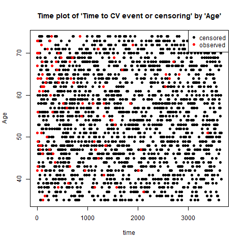

compareGroups 4.0: Descriptives by groups
Isaac Subirana, Joan Vila and Héctor Sanz
2020-12-22
compareGroups_vignette.Rmd
News
tibbleclass data sets possibly imported byhaven,readxl,readr, etc. or to be used bytydiverseanddplyrpackages are supported.new function called
descrTablehas been implemented to build descriptive tables in a single step.export2mdto export descriptive tables to R-markdown documents has been improved and now supports stratified tables for HTML.new funciton called
strataTablehas been implemented to build descriptive tables by stratas (values or levels of a variable).Date variables are treated as continuous-non normal, performing medians, quartiles and non-parametric tests, but now are printed dates.
New argument
var.equaladded incompareGroupsanddescrTable. This allows to consider different variances when comparing means between more than two groups.
Introduction
The compareGroups package (Subirana, Sanz, and Vila 2014) allows users to create tables displaying results of univariate analyses, stratified or not by categorical variable groupings.
Tables can easily be exported to CSV, LaTeX, HTML, PDF, Word or Excel, or inserted in R-markdown files to generate reports automatically.
This package can be used from the R prompt or from a user-friendly graphical user interface for non-R familiarized users.
The compareGroups package is available on CRAN repository. To load the package using the R prompt, enter:
library(compareGroups)This document provides an overview of the usage of the compareGroups package with a real examples, both using the R syntax and the graphical user interface. It is structure as follows:
- Introduction of the package (section 2) and the data used as example (section 3),
- Instructions to perform descriptive tables and exploration plots using R syntax are explained (section 4), and
- Usage of graphical user interface based on tcl-tk (section 5) and based on Shiny (section 6) are shown.
Package structure: classes and methods
The compareGroups package has three functions:
-
compareGroupscreates an object of classcompareGroups. This object can be:- printed
- summarized
- plotted
- updated
-
createTablecreates an object of classcreateTable. This object can be:- printed
- summarized
-
export2csv,export2html,export2latex,export2pdf,export2md,export2wordandexport2xlswill export results to CSV, HTML, LaTeX, PDF, Markdown, Word or Excel, respectively.
Figure 1 shows how the package is structured in terms of functions, classes and methods.

Figure 1. Diagram of package structure.
Since version 4.0, a new function called descrTable has been implemented which is a shortcut of compareGroupsand createTable, i.e. step 1 and step 2 in a single step (see section 4.2.5).
Data used as example
To illustrate how this package works we sampled 85% data from the participants in the PREDIMED study (Estruch et al. 2013). PREDIMED is a multicenter trial in Spain, were randomly assigned participants who were at high cardiovascular risk, but with no cardiovascular disease at enrolment, to one of three diets: a Mediterranean diet supplemented with extra-virgin olive oil (MedDiet+VOO), a Mediterranean diet supplemented with mixed nuts (MedDiet+Nuts), or a control diet (advice to reduce dietary fat). Participants received quarterly individual and group educational sessions and, depending on group assignment, free provision of extra-virgin olive oil, mixed nuts, or small non-food gifts. The primary end point was the rate of major cardiovascular events (myocardial infarction, stroke, or death from cardiovascular causes.
First of all, load PREDIMED data typing:
data(predimed)
Variables and labels in this data frame are:
| Name | Label | Codes |
|---|---|---|
| group | Intervention group | Control; MedDiet + Nuts; MedDiet + VOO |
| sex | Sex | Male; Female |
| age | Age | |
| smoke | Smoking | Never; Current; Former |
| bmi | Body mass index | |
| waist | Waist circumference | |
| wth | Waist-to-height ratio | |
| htn | Hypertension | No; Yes |
| diab | Type-2 diabetes | No; Yes |
| hyperchol | Dyslipidemia | No; Yes |
| famhist | Family history of premature CHD | No; Yes |
| hormo | Hormone-replacement therapy | No; Yes |
| p14 | MeDiet Adherence score | |
| toevent | follow-up to main event (years) | |
| event | AMI, stroke, or CV Death | No; Yes |
OBSERVATIONS:
It is important to note that
compareGroupsis not aimed to perform quality control of the data. Other useful packages such as2lh(Genolini, Desgraupes, and Franca 2011) are available for this purpose.It is strongly recommended that the data.frame contain only the variables to be analyzed; the ones not needed in the present analysis should be removed from the list.
The nature of variables to be analyzed should be known, or at least which variables are to be used as categorical. It is important to code categorical variables as factors and the order of their levels is meaningful in this package.
To label the variables set the “label” attributes from each of them. The tables of results will contain the variable labels (by default).
Time-to-event variables
A variable of class Surv must be created to deal with time-to-event variables (i.e., time to Cardiovascular event/censored in our example):
library(survival)
predimed$tmain <- with(predimed, Surv(toevent, event == 'Yes'))
attr(predimed$tmain,"label") <- "AMI, stroke, or CV Death"Note that variables tmain and tcv are created as time-to-death and time-to-cardiovascular event, respectively, both taking into account censoring (i.e. they are of class Surv).
Using syntax
Computing descriptives
compareGroups is the main function which does all the calculus. It is needed to store results in an object. Later, applying the function createTable (Section 4.2) to this object will create tables of the analysis results.
For example, to perform a univariate analysis with the predimed data between group (“response” variable) and all other variables (“explanatory” variables), this formula is required:
compareGroups(group ~ . , data=predimed)
Selecting response variables
If only a dot occurs on the right side of the ~ all variables in the data frame will be used.
To remove the variable toevent and event from the analysis:
compareGroups(group ~ . -toevent - event, data=predimed)To select some explanatory variables (e.g., age, sex and waist) and store results in an object of class compareGroups:
res<-compareGroups(group ~ age + sex + smoke + waist + hormo, data=predimed)
res
-------- Summary of results by groups of 'Intervention group'---------
var N p.value method selection
1 Age 6324 0.003** continuous normal ALL
2 Sex 6324 <0.001** categorical ALL
3 Smoking 6324 0.444 categorical ALL
4 Waist circumference 6324 0.045** continuous normal ALL
5 Hormone-replacement therapy 5661 0.850 categorical ALL
-----
Signif. codes: 0 '**' 0.05 '*' 0.1 ' ' 1 Note: Although we have full data (n= 6324) for Age, Sex and Waist circumference, there are some missing data in Hormone-replacement therapy (probably male participants).
Diet groups have some differences in Smoking and Hormone-replacement therapy although those don’t reach statistical significance (p-value=0.714 and 0.859, repectively); although Age, Sex and Waist circumference are clearly different.
Age & Waist circumference has been used as continuous and normal distributed. Sex, Smoking & Hormone-replacement therapy as categorical.
No filters have been used (e.g., selecting only treated patients); therefore, the selection column lists “ALL” (for all variables).
Subsetting
To perform the analysis in a subset of participants (e.g., “female” participants):
compareGroups(group ~ age + smoke + waist + hormo, data=predimed, subset = sex=='Female')
-------- Summary of results by groups of 'group'---------
var N p.value method selection
1 Age 3645 0.056* continuous normal sex == "Female"
2 Smoking 3645 0.907 categorical sex == "Female"
3 Waist circumference 3645 0.016** continuous normal sex == "Female"
4 Hormone-replacement therapy 3459 0.898 categorical sex == "Female"
-----
Signif. codes: 0 '**' 0.05 '*' 0.1 ' ' 1 Note that only results for female participants are shown.
To subset specific variable/s (e.g., hormo and waist):
compareGroups(group ~ age + sex + smoke + waist + hormo, data=predimed, selec = list(hormo= sex=="Female", waist = waist>20 ))
-------- Summary of results by groups of 'Intervention group'---------
var N p.value method selection
1 Age 6324 0.003** continuous normal ALL
2 Sex 6324 <0.001** categorical ALL
3 Smoking 6324 0.444 categorical ALL
4 Waist circumference 6324 0.045** continuous normal waist > 20
5 Hormone-replacement therapy 3459 0.898 categorical sex == "Female"
-----
Signif. codes: 0 '**' 0.05 '*' 0.1 ' ' 1 Combinations are also allowed, e.g.:
compareGroups(group ~ age + smoke + waist + hormo, data=predimed, selec = list(waist= !is.na(hormo)), subset = sex=="Female")
-------- Summary of results by groups of 'group'---------
var N p.value method selection
1 Age 3645 0.056* continuous normal sex == "Female"
2 Smoking 3645 0.907 categorical sex == "Female"
3 Waist circumference 3459 0.007** continuous normal (sex == "Female") & (!is.na(hormo))
4 Hormone-replacement therapy 3459 0.898 categorical sex == "Female"
-----
Signif. codes: 0 '**' 0.05 '*' 0.1 ' ' 1 A variable can appear twice in the formula, e.g.:
compareGroups(group ~ age + sex + bmi + bmi + waist + hormo, data=predimed, selec = list(bmi.1=!is.na(hormo)))
-------- Summary of results by groups of 'Intervention group'---------
var N p.value method selection
1 Age 6324 0.003** continuous normal ALL
2 Sex 6324 <0.001** categorical ALL
3 Body mass index 6324 <0.001** continuous normal ALL
4 Body mass index 5661 <0.001** continuous normal !is.na(hormo)
5 Waist circumference 6324 0.045** continuous normal ALL
6 Hormone-replacement therapy 5661 0.850 categorical ALL
-----
Signif. codes: 0 '**' 0.05 '*' 0.1 ' ' 1 In this case results for bmi will be reported for all participants (n= 6324) and also for only those with no missing in Hormone-replacement therapy (!is.na(hormo)). Note that “bmi.1” in the selec argument refers to the second time that bmi appears in the formula.
Methods for continuous variables
By default continuous variables are analyzed as normal-distributed. When a table is built (see createTable function, Section 4.2), continuous variables will be described with mean and standard deviation. To change default options, e.g., “waist” used as non-normal distributed:
compareGroups(group ~ age + smoke + waist + hormo, data=predimed, method = c(waist=2))
-------- Summary of results by groups of 'Intervention group'---------
var N p.value method selection
1 Age 6324 0.003** continuous normal ALL
2 Smoking 6324 0.444 categorical ALL
3 Waist circumference 6324 0.085* continuous non-normal ALL
4 Hormone-replacement therapy 5661 0.850 categorical ALL
-----
Signif. codes: 0 '**' 0.05 '*' 0.1 ' ' 1 Note that “continuous non-normal” is shown in the method column for the variable Hormone-replacement therapy.
Possible values in methods statement are:
1: forces analysis as normal-distributed
2: forces analysis as continuous non-normal
3: forces analysis as categorical
NA: performs a Shapiro-Wilks test to decide between normal or non-normal
If the method argument is stated as NA for a variable, then a Shapiro-Wilk test for normality is used to decide if the variable is normal or non-normal distributed. To change the significance threshold:
compareGroups(group ~ age + smoke + waist + hormo, data=predimed, method = c(waist=NA), alpha= 0.01)
-------- Summary of results by groups of 'Intervention group'---------
var N p.value method selection
1 Age 6324 0.003** continuous normal ALL
2 Smoking 6324 0.444 categorical ALL
3 Waist circumference 6324 0.085* continuous non-normal ALL
4 Hormone-replacement therapy 5661 0.850 categorical ALL
-----
Signif. codes: 0 '**' 0.05 '*' 0.1 ' ' 1 According to Shapiro-Wilk test, stating the cutpoint at 0.01 level, “Hormone-replacement therapy” departed significantly from the normal distribution and therefore the method for this variable will be “continuous non-normal”.
All non factor variables are considered as continuous. Exception is made (by default) for those that have fewer than 5 different values. This threshold can be changed in the min.dis statement:
predimed$age7gr<-as.integer(cut(predimed$age, breaks=c(-Inf,55,60,65,70,75,80,Inf), right=TRUE))
compareGroups(group ~ age7gr, data=predimed, method = c(age7gr=NA))
-------- Summary of results by groups of 'Intervention group'---------
var N p.value method selection
1 age7gr 6324 0.007** continuous non-normal ALL
-----
Signif. codes: 0 '**' 0.05 '*' 0.1 ' ' 1
compareGroups(group ~ age7gr, data=predimed, method = c(age7gr=NA), min.dis=8)
-------- Summary of results by groups of 'Intervention group'---------
var N p.value method selection
1 age7gr 6324 0.009** categorical ALL
-----
Signif. codes: 0 '**' 0.05 '*' 0.1 ' ' 1 To avoid errors the maximum categories for the response variable is set at 5 in this example (default value). If this variable has more than 5 different values, the function compareGroups returns an error message. For example:
compareGroups(age7gr ~ sex + bmi + waist , data=predimed)Error en compareGroups.default(X = X, y = y, include.label = include.label, :
number of groups must be less or equal to 5Defaults setting can be changed with the max.ylev statement:
compareGroups(age7gr ~ sex + bmi + waist, data=predimed, max.ylev=7)
-------- Summary of results by groups of 'age7gr'---------
var N p.value method selection
1 Sex 6324 <0.001** categorical ALL
2 Body mass index 6324 0.021** continuous normal ALL
3 Waist circumference 6324 0.034** continuous normal ALL
-----
Signif. codes: 0 '**' 0.05 '*' 0.1 ' ' 1 Similarly, by default there is a limit for the maximum number of levels for an explanatory variable. If this level is exceeded, the variable is removed from the analysis and a warning message is printed:
compareGroups(group ~ sex + age7gr, method= (age7gr=3), data=predimed, max.xlev=5)Warning in compareGroups.default(X = X, y = y, include.label = include.label, :
Variables 'age7gr' have been removed since some errors ocurred
Dressing up the output
Although the options described in this section correspond to compareGroups function, results of changing/setting them won’t be visible until the table is created with the createTable function (explained later).
-
include.label: By default the variable labels are shown in the output (if there is no label the name will be printed). Changing the statement include.label from “= TRUE” (default) to “= FALSE” will cause variable names to be printed instead.
compareGroups(group ~ age + smoke + waist + hormo, data=predimed, include.label= FALSE)
-------- Summary of results by groups of 'group'---------
var N p.value method selection
1 age 6324 0.003** continuous normal ALL
2 smoke 6324 0.444 categorical ALL
3 waist 6324 0.045** continuous normal ALL
4 hormo 5661 0.850 categorical ALL
-----
Signif. codes: 0 '**' 0.05 '*' 0.1 ' ' 1 -
Q1,Q3: When the method for a variable is stated as “2” (i.e., to be analyzed as continuous non-normal; see section 4.1.3), by default the median and quartiles 1 and 3 will be shown in the final results, after applying the functioncreateTable(see Section 4.2).
resu1<-compareGroups(group ~ age + waist, data=predimed, method = c(waist=2))
createTable(resu1)
--------Summary descriptives table by 'Intervention group'---------
__________________________________________________________________________
Control MedDiet + Nuts MedDiet + VOO p.overall
N=2042 N=2100 N=2182
¯¯¯¯¯¯¯¯¯¯¯¯¯¯¯¯¯¯¯¯¯¯¯¯¯¯¯¯¯¯¯¯¯¯¯¯¯¯¯¯¯¯¯¯¯¯¯¯¯¯¯¯¯¯¯¯¯¯¯¯¯¯¯¯¯¯¯¯¯¯¯¯¯¯
Age 67.3 (6.28) 66.7 (6.02) 67.0 (6.21) 0.003
Waist circumference 101 [94.0;108] 100 [93.0;107] 100 [93.0;107] 0.085
¯¯¯¯¯¯¯¯¯¯¯¯¯¯¯¯¯¯¯¯¯¯¯¯¯¯¯¯¯¯¯¯¯¯¯¯¯¯¯¯¯¯¯¯¯¯¯¯¯¯¯¯¯¯¯¯¯¯¯¯¯¯¯¯¯¯¯¯¯¯¯¯¯¯ Note: percentiles 25 and 75 are calculated for “Waist circumference”.
To get instead percentile 2.5% and 97.5%:
resu2<-compareGroups(group ~ age + smoke + waist + hormo, data=predimed, method = c(waist=2), Q1=0.025, Q3=0.975)
createTable(resu2)
--------Summary descriptives table by 'Intervention group'---------
___________________________________________________________________________________
Control MedDiet + Nuts MedDiet + VOO p.overall
N=2042 N=2100 N=2182
¯¯¯¯¯¯¯¯¯¯¯¯¯¯¯¯¯¯¯¯¯¯¯¯¯¯¯¯¯¯¯¯¯¯¯¯¯¯¯¯¯¯¯¯¯¯¯¯¯¯¯¯¯¯¯¯¯¯¯¯¯¯¯¯¯¯¯¯¯¯¯¯¯¯¯¯¯¯¯¯¯¯¯
Age 67.3 (6.28) 66.7 (6.02) 67.0 (6.21) 0.003
Smoking: 0.444
Never 1282 (62.8%) 1259 (60.0%) 1351 (61.9%)
Current 270 (13.2%) 296 (14.1%) 292 (13.4%)
Former 490 (24.0%) 545 (26.0%) 539 (24.7%)
Waist circumference 101 [80.0;123] 100 [80.0;121] 100 [80.0;121] 0.085
Hormone-replacement therapy: 0.850
No 1811 (98.3%) 1835 (98.4%) 1918 (98.2%)
Yes 31 (1.68%) 30 (1.61%) 36 (1.84%)
¯¯¯¯¯¯¯¯¯¯¯¯¯¯¯¯¯¯¯¯¯¯¯¯¯¯¯¯¯¯¯¯¯¯¯¯¯¯¯¯¯¯¯¯¯¯¯¯¯¯¯¯¯¯¯¯¯¯¯¯¯¯¯¯¯¯¯¯¯¯¯¯¯¯¯¯¯¯¯¯¯¯¯ Note: percentiles 2.5% and 97.5% are calculated for Follow-up.
To get minimum and maximum:
compareGroups(group ~ age + smoke + waist + hormo, data=predimed, method = c(waist=2), Q1=0, Q3=1)-
simplify: Sometimes a categorical variable has no individuals for a specific group. For example, smoker has 3 levels. As an example and to illustrate this problem, we have created a new variable smk with a new category (“Unknown”):
predimed$smk<-predimed$smoke
levels(predimed$smk)<- c("Never smoker", "Current or former < 1y", "Never or former >= 1y", "Unknown")
attr(predimed$smk,"label")<-"Smoking 4 cat."
cbind(table(predimed$smk)) [,1]
Never smoker 3892
Current or former < 1y 858
Never or former >= 1y 1574
Unknown 0Note that this new category (“unknown”) has no individuals:
compareGroups(group ~ age + smk + waist + hormo, data=predimed)
-------- Summary of results by groups of 'Intervention group'---------
var N p.value method selection
1 Age 6324 0.001** continuous normal ALL
2 Smoking 4 cat. 6324 0.714 categorical ALL
3 Waist circumference 6324 0.019** continuous normal ALL
4 Hormone-replacement therapy 5650 0.859 categorical ALL
-----
Signif. codes: 0 '**' 0.05 '*' 0.1 ' ' 1
Warning message:
In compare.i(X[, i], y = y, selec.i = selec[i], method.i = method[i], :
Some levels of 'smk' are removed since no observation in that/those levelsNote that a “Warning” message is printed related to the problem with smk.
To avoid using empty categories, simplify must be stated as TRUE (Default value).
compareGroups(group ~ age + smk, data=predimed, simplify=FALSE)
-------- Summary of results by groups of 'Intervention group'---------
var N p.value method selection
1 Age 6324 0.001** continuous normal ALL
2 Smoking 4 cat. 6324 . categorical ALL
-----
Signif. codes: 0 '**' 0.05 '*' 0.1 ' ' 1
Warning messages:
1: In chisq.test(obj, simulate.p.value = TRUE) :
cannot compute simulated p-value with zero marginals
2: In chisq.test(obj, simulate.p.value = TRUE) :
Chi-squared approximation may be incorrectNota that a “warning” message is shown and no p-values are calculated for “Smoking”.
Summary
Applying the summary function to an object of class createTable will obtain a more detailed output:
res<-compareGroups(group ~ age + sex + smoke + waist + hormo, method = c(waist=2), data=predimed)
summary(res[c(1, 2, 4)])
--- Descriptives of each row-variable by groups of 'Intervention group' ---
-------------------
row-variable: Age
N mean sd lower upper p.overall p.trend p.Control vs MedDiet + Nuts p.Control vs MedDiet + VOO
[ALL] 6324 67.0117 6.17499 66.85948 67.16392
Control 2042 67.34231 6.27992 67.06977 67.61485 0.002666 0.101163 0.001672 0.20596
MedDiet + Nuts 2100 66.6819 6.016395 66.42444 66.93937
MedDiet + VOO 2182 67.01971 6.212578 66.75889 67.28052
p.MedDiet + Nuts vs MedDiet + VOO
[ALL]
Control 0.172672
MedDiet + Nuts
MedDiet + VOO
-------------------
row-variable: Sex
Male Female Male% Female% p.overall p.trend p.Control vs MedDiet + Nuts p.Control vs MedDiet + VOO
[ALL] 2679 3645 42.36243 57.63757
Control 812 1230 39.76494 60.23506 8.1e-05 0.388386 0.000133 0.358324
MedDiet + Nuts 968 1132 46.09524 53.90476
MedDiet + VOO 899 1283 41.20073 58.79927
p.MedDiet + Nuts vs MedDiet + VOO
[ALL]
Control 0.002076
MedDiet + Nuts
MedDiet + VOO
-------------------
row-variable: Waist circumference
N med Q1 Q3 lower upper p.overall p.trend p.Control vs MedDiet + Nuts p.Control vs MedDiet + VOO
[ALL] 6324 100 93 107 100 101
Control 2042 101 94 108 100 101 0.084601 0.039557 0.125792 0.110639
MedDiet + Nuts 2100 100 93 107 100 101
MedDiet + VOO 2182 100 93 107 100 101
p.MedDiet + Nuts vs MedDiet + VOO
[ALL]
Control 0.743479
MedDiet + Nuts
MedDiet + VOO Note that because only variables 1, 3 and 4 are selected, only results for Age, Sex and Waist circumference are shown. Age is summarized by the mean and the standard deviation, Sex by frequencies and percentage, and Waist circumference (method =2) by the median and quartiles.
Plotting
Variables can be plotted to see their distribution. Plots differ according to whether the variable is continuous or categorical. Plots can be seen on-screen or saved in different formats (BMP, JPG’, PNG, TIF or PDF). To specify the format use the argument `type’.


Plots also can be done according to grouping variable. In this case only a boxplot is shown for continuous variables:

Updating
The object from compareGroups can later be updated. For example:
res<-compareGroups(group ~ age + sex + smoke + waist + hormo, data=predimed)
res
-------- Summary of results by groups of 'Intervention group'---------
var N p.value method selection
1 Age 6324 0.003** continuous normal ALL
2 Sex 6324 <0.001** categorical ALL
3 Smoking 6324 0.444 categorical ALL
4 Waist circumference 6324 0.045** continuous normal ALL
5 Hormone-replacement therapy 5661 0.850 categorical ALL
-----
Signif. codes: 0 '**' 0.05 '*' 0.1 ' ' 1 The object res is updated using:
res<-update(res, . ~. - sex + bmi + toevent, subset = sex=='Female', method = c(waist=2, tovent=2), selec = list(bmi=!is.na(hormo)))
resNote that “Sex” is removed as an explanatory variable but used as a filter, subsetting only “Female” participants. Variable “Waist circumference” has been changed to “continuous non-normal”. Two new variables have been added: Body mass index and Follow-up (stated continuous non-normal). For Body mass index is stated to show only data of participants with non-missing values in Hormone-replacement therapy.
Substracting results
Since version 3.0, there is a new function called getResults to retrieve some specific results computed by compareGroups, such as p-values, descriptives (means, proportions, …), etc.
For example, it may be interesting to recover the p-values for each variable as a vector to further manipulate it in R, like adjusting for multiple comparison with p.adjust. For example, lets take the example data from SNPassoc package that contains information of dozens of SNPs (genetic variants) from a sample of cases and controls. In this case we analize five of them:
data(SNPs)
tab <- createTable(compareGroups(casco ~ snp10001 + snp10002 + snp10005 + snp10008 + snp10009, SNPs))
pvals <- getResults(tab, "p.overall")
p.adjust(pvals, method = "BH") snp10001 snp10002 snp10005 snp10008 snp10009
0.7051300 0.7072158 0.7583432 0.7583432 0.7072158
Odds Ratios and Hazard Ratios
When the response variable is binary, the Odds Ratio (OR) can be printed in the final table. If the response variable is time-to-event (see Section 3.1), the Hazard Ratio (HR) can be printed instead.
-
ref: This statement can be used to change the reference category:
res1<-compareGroups(htn ~ age + sex + bmi + smoke, data=predimed, ref=1)
createTable(res1, show.ratio=TRUE)
--------Summary descriptives table by 'Hypertension'---------
___________________________________________________________________________
No Yes OR p.ratio p.overall
N=1089 N=5235
¯¯¯¯¯¯¯¯¯¯¯¯¯¯¯¯¯¯¯¯¯¯¯¯¯¯¯¯¯¯¯¯¯¯¯¯¯¯¯¯¯¯¯¯¯¯¯¯¯¯¯¯¯¯¯¯¯¯¯¯¯¯¯¯¯¯¯¯¯¯¯¯¯¯¯
Age 65.9 (6.19) 67.2 (6.15) 1.04 [1.03;1.05] <0.001 <0.001
Sex: <0.001
Male 595 (54.6%) 2084 (39.8%) Ref. Ref.
Female 494 (45.4%) 3151 (60.2%) 1.82 [1.60;2.08] 0.000
Body mass index 28.9 (3.69) 30.2 (3.80) 1.10 [1.08;1.12] <0.001 <0.001
Smoking: <0.001
Never 536 (49.2%) 3356 (64.1%) Ref. Ref.
Current 233 (21.4%) 625 (11.9%) 0.43 [0.36;0.51] 0.000
Former 320 (29.4%) 1254 (24.0%) 0.63 [0.54;0.73] <0.001
¯¯¯¯¯¯¯¯¯¯¯¯¯¯¯¯¯¯¯¯¯¯¯¯¯¯¯¯¯¯¯¯¯¯¯¯¯¯¯¯¯¯¯¯¯¯¯¯¯¯¯¯¯¯¯¯¯¯¯¯¯¯¯¯¯¯¯¯¯¯¯¯¯¯¯ Note that for categorical response variables the reference category is the first one in the statement:
res2<-compareGroups(htn ~ age + sex + bmi + smoke, data=predimed, ref=c(smoke=1, sex=2))
createTable(res2, show.ratio=TRUE)
--------Summary descriptives table by 'Hypertension'---------
___________________________________________________________________________
No Yes OR p.ratio p.overall
N=1089 N=5235
¯¯¯¯¯¯¯¯¯¯¯¯¯¯¯¯¯¯¯¯¯¯¯¯¯¯¯¯¯¯¯¯¯¯¯¯¯¯¯¯¯¯¯¯¯¯¯¯¯¯¯¯¯¯¯¯¯¯¯¯¯¯¯¯¯¯¯¯¯¯¯¯¯¯¯
Age 65.9 (6.19) 67.2 (6.15) 1.04 [1.03;1.05] <0.001 <0.001
Sex: <0.001
Male 595 (54.6%) 2084 (39.8%) 0.55 [0.48;0.63] 0.000
Female 494 (45.4%) 3151 (60.2%) Ref. Ref.
Body mass index 28.9 (3.69) 30.2 (3.80) 1.10 [1.08;1.12] <0.001 <0.001
Smoking: <0.001
Never 536 (49.2%) 3356 (64.1%) Ref. Ref.
Current 233 (21.4%) 625 (11.9%) 0.43 [0.36;0.51] 0.000
Former 320 (29.4%) 1254 (24.0%) 0.63 [0.54;0.73] <0.001
¯¯¯¯¯¯¯¯¯¯¯¯¯¯¯¯¯¯¯¯¯¯¯¯¯¯¯¯¯¯¯¯¯¯¯¯¯¯¯¯¯¯¯¯¯¯¯¯¯¯¯¯¯¯¯¯¯¯¯¯¯¯¯¯¯¯¯¯¯¯¯¯¯¯¯ Note that the reference category for Smoking status is the first and for Sex the second.
-
ref.no: Similarly to therefstatement,ref.nois used to state “no” as the reference category for all variables with this category:
res<-compareGroups(htn ~ age + sex + bmi + hormo + hyperchol, data=predimed, ref.no='NO')
createTable(res, show.ratio=TRUE)
--------Summary descriptives table by 'Hypertension'---------
________________________________________________________________________________________
No Yes OR p.ratio p.overall
N=1089 N=5235
¯¯¯¯¯¯¯¯¯¯¯¯¯¯¯¯¯¯¯¯¯¯¯¯¯¯¯¯¯¯¯¯¯¯¯¯¯¯¯¯¯¯¯¯¯¯¯¯¯¯¯¯¯¯¯¯¯¯¯¯¯¯¯¯¯¯¯¯¯¯¯¯¯¯¯¯¯¯¯¯¯¯¯¯¯¯¯¯
Age 65.9 (6.19) 67.2 (6.15) 1.04 [1.03;1.05] <0.001 <0.001
Sex: <0.001
Male 595 (54.6%) 2084 (39.8%) Ref. Ref.
Female 494 (45.4%) 3151 (60.2%) 1.82 [1.60;2.08] 0.000
Body mass index 28.9 (3.69) 30.2 (3.80) 1.10 [1.08;1.12] <0.001 <0.001
Hormone-replacement therapy: 0.856
No 928 (98.4%) 4636 (98.3%) Ref. Ref.
Yes 15 (1.59%) 82 (1.74%) 1.08 [0.64;1.97] 0.773
Dyslipidemia: <0.001
No 409 (37.6%) 1337 (25.5%) Ref. Ref.
Yes 680 (62.4%) 3898 (74.5%) 1.75 [1.53;2.01] <0.001
¯¯¯¯¯¯¯¯¯¯¯¯¯¯¯¯¯¯¯¯¯¯¯¯¯¯¯¯¯¯¯¯¯¯¯¯¯¯¯¯¯¯¯¯¯¯¯¯¯¯¯¯¯¯¯¯¯¯¯¯¯¯¯¯¯¯¯¯¯¯¯¯¯¯¯¯¯¯¯¯¯¯¯¯¯¯¯¯ Note: “no”, “No” or “NO” will produce the same results; the coding is not case sensitive.
-
fact.ratio: By default OR or HR for continuous variables are calculated for each unit increase. It can be changed by thefact.orstatement:
res<-compareGroups(htn ~ age + bmi, data=predimed)
createTable(res, show.ratio=TRUE)
--------Summary descriptives table by 'Hypertension'---------
__________________________________________________________________________
No Yes OR p.ratio p.overall
N=1089 N=5235
¯¯¯¯¯¯¯¯¯¯¯¯¯¯¯¯¯¯¯¯¯¯¯¯¯¯¯¯¯¯¯¯¯¯¯¯¯¯¯¯¯¯¯¯¯¯¯¯¯¯¯¯¯¯¯¯¯¯¯¯¯¯¯¯¯¯¯¯¯¯¯¯¯¯
Age 65.9 (6.19) 67.2 (6.15) 1.04 [1.03;1.05] <0.001 <0.001
Body mass index 28.9 (3.69) 30.2 (3.80) 1.10 [1.08;1.12] <0.001 <0.001
¯¯¯¯¯¯¯¯¯¯¯¯¯¯¯¯¯¯¯¯¯¯¯¯¯¯¯¯¯¯¯¯¯¯¯¯¯¯¯¯¯¯¯¯¯¯¯¯¯¯¯¯¯¯¯¯¯¯¯¯¯¯¯¯¯¯¯¯¯¯¯¯¯¯ Here the OR is for the increase of one unit for Age and Systolic blood pressure.
res<-compareGroups(htn ~ age + bmi, data=predimed, fact.ratio= c(age=10, bmi=2))
createTable(res, show.ratio=TRUE)
--------Summary descriptives table by 'Hypertension'---------
__________________________________________________________________________
No Yes OR p.ratio p.overall
N=1089 N=5235
¯¯¯¯¯¯¯¯¯¯¯¯¯¯¯¯¯¯¯¯¯¯¯¯¯¯¯¯¯¯¯¯¯¯¯¯¯¯¯¯¯¯¯¯¯¯¯¯¯¯¯¯¯¯¯¯¯¯¯¯¯¯¯¯¯¯¯¯¯¯¯¯¯¯
Age 65.9 (6.19) 67.2 (6.15) 1.43 [1.28;1.59] <0.001 <0.001
Body mass index 28.9 (3.69) 30.2 (3.80) 1.22 [1.17;1.26] <0.001 <0.001
¯¯¯¯¯¯¯¯¯¯¯¯¯¯¯¯¯¯¯¯¯¯¯¯¯¯¯¯¯¯¯¯¯¯¯¯¯¯¯¯¯¯¯¯¯¯¯¯¯¯¯¯¯¯¯¯¯¯¯¯¯¯¯¯¯¯¯¯¯¯¯¯¯¯ Here the OR is for the increase of 10 years for Age and 2 units for “Body mass index”.
-
ref.y: By default when OR or HR are calculated, the reference category for the response variable is the first. The reference category could be changed using theref.ystatement:
res<-compareGroups(htn ~ age + sex + bmi + hyperchol, data=predimed)
createTable(res, show.ratio=TRUE)
--------Summary descriptives table by 'Hypertension'---------
___________________________________________________________________________
No Yes OR p.ratio p.overall
N=1089 N=5235
¯¯¯¯¯¯¯¯¯¯¯¯¯¯¯¯¯¯¯¯¯¯¯¯¯¯¯¯¯¯¯¯¯¯¯¯¯¯¯¯¯¯¯¯¯¯¯¯¯¯¯¯¯¯¯¯¯¯¯¯¯¯¯¯¯¯¯¯¯¯¯¯¯¯¯
Age 65.9 (6.19) 67.2 (6.15) 1.04 [1.03;1.05] <0.001 <0.001
Sex: <0.001
Male 595 (54.6%) 2084 (39.8%) Ref. Ref.
Female 494 (45.4%) 3151 (60.2%) 1.82 [1.60;2.08] 0.000
Body mass index 28.9 (3.69) 30.2 (3.80) 1.10 [1.08;1.12] <0.001 <0.001
Dyslipidemia: <0.001
No 409 (37.6%) 1337 (25.5%) Ref. Ref.
Yes 680 (62.4%) 3898 (74.5%) 1.75 [1.53;2.01] <0.001
¯¯¯¯¯¯¯¯¯¯¯¯¯¯¯¯¯¯¯¯¯¯¯¯¯¯¯¯¯¯¯¯¯¯¯¯¯¯¯¯¯¯¯¯¯¯¯¯¯¯¯¯¯¯¯¯¯¯¯¯¯¯¯¯¯¯¯¯¯¯¯¯¯¯¯ Note: This output shows the OR of having hypertension. Therefore, “Non-hypertension” is the reference category.
res<-compareGroups(htn ~ age + sex + bmi + hyperchol, data=predimed, ref.y=2)
createTable(res, show.ratio=TRUE)
--------Summary descriptives table by 'Hypertension'---------
___________________________________________________________________________
No Yes OR p.ratio p.overall
N=1089 N=5235
¯¯¯¯¯¯¯¯¯¯¯¯¯¯¯¯¯¯¯¯¯¯¯¯¯¯¯¯¯¯¯¯¯¯¯¯¯¯¯¯¯¯¯¯¯¯¯¯¯¯¯¯¯¯¯¯¯¯¯¯¯¯¯¯¯¯¯¯¯¯¯¯¯¯¯
Age 65.9 (6.19) 67.2 (6.15) 0.96 [0.98;0.95] <0.001 <0.001
Sex: <0.001
Male 595 (54.6%) 2084 (39.8%) Ref. Ref.
Female 494 (45.4%) 3151 (60.2%) 0.55 [0.48;0.63] 0.000
Body mass index 28.9 (3.69) 30.2 (3.80) 0.91 [0.92;0.89] <0.001 <0.001
Dyslipidemia: <0.001
No 409 (37.6%) 1337 (25.5%) Ref. Ref.
Yes 680 (62.4%) 3898 (74.5%) 0.57 [0.50;0.65] <0.001
¯¯¯¯¯¯¯¯¯¯¯¯¯¯¯¯¯¯¯¯¯¯¯¯¯¯¯¯¯¯¯¯¯¯¯¯¯¯¯¯¯¯¯¯¯¯¯¯¯¯¯¯¯¯¯¯¯¯¯¯¯¯¯¯¯¯¯¯¯¯¯¯¯¯¯ Note: This output shows the OR of having No hypertension, and ‘Hypertension’ is now the reference category.
When the response variable is of class Surv, the bivariate plot function returns a Kaplan-Meier figure if the explanatory variable is categorical. For continuous variables the function returns a line for each individual, ending with a circle for censored and with a plus sign for uncensored.
plot(compareGroups(tmain ~ sex, data=predimed), bivar=TRUE, file="./figures/bivarsurv/", type="png")
plot(compareGroups(tmain ~ age, data=predimed), bivar=TRUE, file="./figures/bivarsurv/", type="png")
Time-to-event explanatory variables
When a variable of class Surv (see Section 3.1) is used as explanatory it will be described with the probability of event, computed by Kaplan-Meier, up to a stated time.
-
timemax: By default probability is calculated at the median of the follow-up period.timemaxoption allows us to change at what time probability is calculated.
res<-compareGroups(sex ~ age + tmain, timemax=c(tmain=3), data=predimed)
resNote that tmain is calculated at 3 years (see section 3.1).
The plot function applied to a variable of class Surv returns a Kaplan-Meier figure. The figure can be stratified by the grouping variable.
plot(res[2], file="./figures/univar/", type="png")
plot(res[2], bivar=TRUE, file="./figures/bivar/", type="png")

Performing the descritive table
The createTable function, applied to an object of compareGroups class, returns tables with descriptives that can be displayed on-screen or exported to CSV, LaTeX, HTML, Word or Excel.
res<-compareGroups(group ~ age + sex + smoke + waist + hormo, data=predimed, selec = list(hormo=sex=="Female"))
restab<-createTable(res)Two tables are created with the createTable function: one with the descriptives and the other with the available data. The print method applied to an object of class createTable prints one or both tables on the R console:
print(restab,which.table='descr')
--------Summary descriptives table by 'Intervention group'---------
________________________________________________________________________________
Control MedDiet + Nuts MedDiet + VOO p.overall
N=2042 N=2100 N=2182
¯¯¯¯¯¯¯¯¯¯¯¯¯¯¯¯¯¯¯¯¯¯¯¯¯¯¯¯¯¯¯¯¯¯¯¯¯¯¯¯¯¯¯¯¯¯¯¯¯¯¯¯¯¯¯¯¯¯¯¯¯¯¯¯¯¯¯¯¯¯¯¯¯¯¯¯¯¯¯¯
Age 67.3 (6.28) 66.7 (6.02) 67.0 (6.21) 0.003
Sex: <0.001
Male 812 (39.8%) 968 (46.1%) 899 (41.2%)
Female 1230 (60.2%) 1132 (53.9%) 1283 (58.8%)
Smoking: 0.444
Never 1282 (62.8%) 1259 (60.0%) 1351 (61.9%)
Current 270 (13.2%) 296 (14.1%) 292 (13.4%)
Former 490 (24.0%) 545 (26.0%) 539 (24.7%)
Waist circumference 101 (10.8) 100 (10.6) 100 (10.4) 0.045
Hormone-replacement therapy: 0.898
No 1143 (97.4%) 1036 (97.2%) 1183 (97.0%)
Yes 31 (2.64%) 30 (2.81%) 36 (2.95%)
¯¯¯¯¯¯¯¯¯¯¯¯¯¯¯¯¯¯¯¯¯¯¯¯¯¯¯¯¯¯¯¯¯¯¯¯¯¯¯¯¯¯¯¯¯¯¯¯¯¯¯¯¯¯¯¯¯¯¯¯¯¯¯¯¯¯¯¯¯¯¯¯¯¯¯¯¯¯¯¯ Note that the option “descr” prints descriptive tables.
print(restab,which.table='avail')
---Available data----
________________________________________________________________________________________________________
[ALL] Control MedDiet + Nuts MedDiet + VOO method select
¯¯¯¯¯¯¯¯¯¯¯¯¯¯¯¯¯¯¯¯¯¯¯¯¯¯¯¯¯¯¯¯¯¯¯¯¯¯¯¯¯¯¯¯¯¯¯¯¯¯¯¯¯¯¯¯¯¯¯¯¯¯¯¯¯¯¯¯¯¯¯¯¯¯¯¯¯¯¯¯¯¯¯¯¯¯¯¯¯¯¯¯¯¯¯¯¯¯¯¯¯¯¯¯
Age 6324 2042 2100 2182 continuous-normal ALL
Sex 6324 2042 2100 2182 categorical ALL
Smoking 6324 2042 2100 2182 categorical ALL
Waist circumference 6324 2042 2100 2182 continuous-normal ALL
Hormone-replacement therapy 3459 1174 1066 1219 categorical sex == "Female"
¯¯¯¯¯¯¯¯¯¯¯¯¯¯¯¯¯¯¯¯¯¯¯¯¯¯¯¯¯¯¯¯¯¯¯¯¯¯¯¯¯¯¯¯¯¯¯¯¯¯¯¯¯¯¯¯¯¯¯¯¯¯¯¯¯¯¯¯¯¯¯¯¯¯¯¯¯¯¯¯¯¯¯¯¯¯¯¯¯¯¯¯¯¯¯¯¯¯¯¯¯¯¯¯ While the option “avail” prints the available data, as well as methods and selections.
By default, only the descriptives table is shown. Stating “both” in which.table argument prints both tables.
Dressing up tables
-
hide: If the explanatory variable is dichotomous, one of the categories often is hidden in the results displayed (i.e., if 42.4% are male, obviously 57.6% are female). To hide some category, e.g., “Male”:
--------Summary descriptives table by 'Intervention group'---------
________________________________________________________________________________
Control MedDiet + Nuts MedDiet + VOO p.overall
N=2042 N=2100 N=2182
¯¯¯¯¯¯¯¯¯¯¯¯¯¯¯¯¯¯¯¯¯¯¯¯¯¯¯¯¯¯¯¯¯¯¯¯¯¯¯¯¯¯¯¯¯¯¯¯¯¯¯¯¯¯¯¯¯¯¯¯¯¯¯¯¯¯¯¯¯¯¯¯¯¯¯¯¯¯¯¯
Age 67.3 (6.28) 66.7 (6.02) 67.0 (6.21) 0.003
Sex: Female 1230 (60.2%) 1132 (53.9%) 1283 (58.8%) <0.001
Smoking: 0.444
Never 1282 (62.8%) 1259 (60.0%) 1351 (61.9%)
Current 270 (13.2%) 296 (14.1%) 292 (13.4%)
Former 490 (24.0%) 545 (26.0%) 539 (24.7%)
Waist circumference 101 (10.8) 100 (10.6) 100 (10.4) 0.045
Hormone-replacement therapy: 0.898
No 1143 (97.4%) 1036 (97.2%) 1183 (97.0%)
Yes 31 (2.64%) 30 (2.81%) 36 (2.95%)
¯¯¯¯¯¯¯¯¯¯¯¯¯¯¯¯¯¯¯¯¯¯¯¯¯¯¯¯¯¯¯¯¯¯¯¯¯¯¯¯¯¯¯¯¯¯¯¯¯¯¯¯¯¯¯¯¯¯¯¯¯¯¯¯¯¯¯¯¯¯¯¯¯¯¯¯¯¯¯¯ Note that the percentage of males is hidden.
-
hide.no: Similarly, as explained above, if the category “no” is to be hidden for all variables:
res<-compareGroups(group ~ age + sex + htn + diab, data=predimed)
createTable(res, hide.no='no', hide = c(sex="Male"))
--------Summary descriptives table by 'Intervention group'---------
___________________________________________________________________
Control MedDiet + Nuts MedDiet + VOO p.overall
N=2042 N=2100 N=2182
¯¯¯¯¯¯¯¯¯¯¯¯¯¯¯¯¯¯¯¯¯¯¯¯¯¯¯¯¯¯¯¯¯¯¯¯¯¯¯¯¯¯¯¯¯¯¯¯¯¯¯¯¯¯¯¯¯¯¯¯¯¯¯¯¯¯¯
Age 67.3 (6.28) 66.7 (6.02) 67.0 (6.21) 0.003
Sex: Female 1230 (60.2%) 1132 (53.9%) 1283 (58.8%) <0.001
Hypertension 1711 (83.8%) 1738 (82.8%) 1786 (81.9%) 0.249
Type-2 diabetes 970 (47.5%) 950 (45.2%) 1082 (49.6%) 0.017
¯¯¯¯¯¯¯¯¯¯¯¯¯¯¯¯¯¯¯¯¯¯¯¯¯¯¯¯¯¯¯¯¯¯¯¯¯¯¯¯¯¯¯¯¯¯¯¯¯¯¯¯¯¯¯¯¯¯¯¯¯¯¯¯¯¯¯ Note: “no”, “No” or “NO” will produce the same results; the coding is not case sensitive.
-
digits: The number of digits that appear in the results can be changed, e.g:
createTable(res, digits= c(age=2, sex = 3))
--------Summary descriptives table by 'Intervention group'---------
_______________________________________________________________________
Control MedDiet + Nuts MedDiet + VOO p.overall
N=2042 N=2100 N=2182
¯¯¯¯¯¯¯¯¯¯¯¯¯¯¯¯¯¯¯¯¯¯¯¯¯¯¯¯¯¯¯¯¯¯¯¯¯¯¯¯¯¯¯¯¯¯¯¯¯¯¯¯¯¯¯¯¯¯¯¯¯¯¯¯¯¯¯¯¯¯¯
Age 67.34 (6.28) 66.68 (6.02) 67.02 (6.21) 0.003
Sex: <0.001
Male 812 (39.765%) 968 (46.095%) 899 (41.201%)
Female 1230 (60.235%) 1132 (53.905%) 1283 (58.799%)
Hypertension: 0.249
No 331 (16.2%) 362 (17.2%) 396 (18.1%)
Yes 1711 (83.8%) 1738 (82.8%) 1786 (81.9%)
Type-2 diabetes: 0.017
No 1072 (52.5%) 1150 (54.8%) 1100 (50.4%)
Yes 970 (47.5%) 950 (45.2%) 1082 (49.6%)
¯¯¯¯¯¯¯¯¯¯¯¯¯¯¯¯¯¯¯¯¯¯¯¯¯¯¯¯¯¯¯¯¯¯¯¯¯¯¯¯¯¯¯¯¯¯¯¯¯¯¯¯¯¯¯¯¯¯¯¯¯¯¯¯¯¯¯¯¯¯¯ Note that mean and standard deviation has two decimal places for age, while percentage in sex has been set to three decimal places.
-
type: By default categorical variables are summarized by frequencies and percentages. This can be changed by thetypeargument:
createTable(res, type=1)
--------Summary descriptives table by 'Intervention group'---------
___________________________________________________________________
Control MedDiet + Nuts MedDiet + VOO p.overall
N=2042 N=2100 N=2182
¯¯¯¯¯¯¯¯¯¯¯¯¯¯¯¯¯¯¯¯¯¯¯¯¯¯¯¯¯¯¯¯¯¯¯¯¯¯¯¯¯¯¯¯¯¯¯¯¯¯¯¯¯¯¯¯¯¯¯¯¯¯¯¯¯¯¯
Age 67.3 (6.28) 66.7 (6.02) 67.0 (6.21) 0.003
Sex: <0.001
Male 39.8% 46.1% 41.2%
Female 60.2% 53.9% 58.8%
Hypertension: 0.249
No 16.2% 17.2% 18.1%
Yes 83.8% 82.8% 81.9%
Type-2 diabetes: 0.017
No 52.5% 54.8% 50.4%
Yes 47.5% 45.2% 49.6%
¯¯¯¯¯¯¯¯¯¯¯¯¯¯¯¯¯¯¯¯¯¯¯¯¯¯¯¯¯¯¯¯¯¯¯¯¯¯¯¯¯¯¯¯¯¯¯¯¯¯¯¯¯¯¯¯¯¯¯¯¯¯¯¯¯¯¯ Note that only percentages are displayed.
createTable(res, type=3)
--------Summary descriptives table by 'Intervention group'---------
___________________________________________________________________
Control MedDiet + Nuts MedDiet + VOO p.overall
N=2042 N=2100 N=2182
¯¯¯¯¯¯¯¯¯¯¯¯¯¯¯¯¯¯¯¯¯¯¯¯¯¯¯¯¯¯¯¯¯¯¯¯¯¯¯¯¯¯¯¯¯¯¯¯¯¯¯¯¯¯¯¯¯¯¯¯¯¯¯¯¯¯¯
Age 67.3 (6.28) 66.7 (6.02) 67.0 (6.21) 0.003
Sex: <0.001
Male 812 968 899
Female 1230 1132 1283
Hypertension: 0.249
No 331 362 396
Yes 1711 1738 1786
Type-2 diabetes: 0.017
No 1072 1150 1100
Yes 970 950 1082
¯¯¯¯¯¯¯¯¯¯¯¯¯¯¯¯¯¯¯¯¯¯¯¯¯¯¯¯¯¯¯¯¯¯¯¯¯¯¯¯¯¯¯¯¯¯¯¯¯¯¯¯¯¯¯¯¯¯¯¯¯¯¯¯¯¯¯ Note that only frequencies are displayed.
Value 2 or NA return the same results, i.e., the default option.
-
show.n: If optionshow.nis set toTRUEa column with available data for each variable appears in the results:
createTable(res, show.n=TRUE)
--------Summary descriptives table by 'Intervention group'---------
_________________________________________________________________________
Control MedDiet + Nuts MedDiet + VOO p.overall N
N=2042 N=2100 N=2182
¯¯¯¯¯¯¯¯¯¯¯¯¯¯¯¯¯¯¯¯¯¯¯¯¯¯¯¯¯¯¯¯¯¯¯¯¯¯¯¯¯¯¯¯¯¯¯¯¯¯¯¯¯¯¯¯¯¯¯¯¯¯¯¯¯¯¯¯¯¯¯¯¯
Age 67.3 (6.28) 66.7 (6.02) 67.0 (6.21) 0.003 6324
Sex: <0.001 6324
Male 812 (39.8%) 968 (46.1%) 899 (41.2%)
Female 1230 (60.2%) 1132 (53.9%) 1283 (58.8%)
Hypertension: 0.249 6324
No 331 (16.2%) 362 (17.2%) 396 (18.1%)
Yes 1711 (83.8%) 1738 (82.8%) 1786 (81.9%)
Type-2 diabetes: 0.017 6324
No 1072 (52.5%) 1150 (54.8%) 1100 (50.4%)
Yes 970 (47.5%) 950 (45.2%) 1082 (49.6%)
¯¯¯¯¯¯¯¯¯¯¯¯¯¯¯¯¯¯¯¯¯¯¯¯¯¯¯¯¯¯¯¯¯¯¯¯¯¯¯¯¯¯¯¯¯¯¯¯¯¯¯¯¯¯¯¯¯¯¯¯¯¯¯¯¯¯¯¯¯¯¯¯¯ -
show.descr: If argumentshow.descris set toFALSEonly p-values are displayed:
createTable(res, show.descr=FALSE)
--------Summary descriptives table by 'Intervention group'---------
__________________________
p.overall
¯¯¯¯¯¯¯¯¯¯¯¯¯¯¯¯¯¯¯¯¯¯¯¯¯¯
Age 0.003
Sex:
Male <0.001
Female
Hypertension:
No 0.249
Yes
Type-2 diabetes:
No 0.017
Yes
¯¯¯¯¯¯¯¯¯¯¯¯¯¯¯¯¯¯¯¯¯¯¯¯¯¯ -
show.all: Ifshow.allargument is set toTRUEa column is displayed with descriptives for all data:
createTable(res, show.all=TRUE)
--------Summary descriptives table by 'Intervention group'---------
_________________________________________________________________________________
[ALL] Control MedDiet + Nuts MedDiet + VOO p.overall
N=6324 N=2042 N=2100 N=2182
¯¯¯¯¯¯¯¯¯¯¯¯¯¯¯¯¯¯¯¯¯¯¯¯¯¯¯¯¯¯¯¯¯¯¯¯¯¯¯¯¯¯¯¯¯¯¯¯¯¯¯¯¯¯¯¯¯¯¯¯¯¯¯¯¯¯¯¯¯¯¯¯¯¯¯¯¯¯¯¯¯
Age 67.0 (6.17) 67.3 (6.28) 66.7 (6.02) 67.0 (6.21) 0.003
Sex: <0.001
Male 2679 (42.4%) 812 (39.8%) 968 (46.1%) 899 (41.2%)
Female 3645 (57.6%) 1230 (60.2%) 1132 (53.9%) 1283 (58.8%)
Hypertension: 0.249
No 1089 (17.2%) 331 (16.2%) 362 (17.2%) 396 (18.1%)
Yes 5235 (82.8%) 1711 (83.8%) 1738 (82.8%) 1786 (81.9%)
Type-2 diabetes: 0.017
No 3322 (52.5%) 1072 (52.5%) 1150 (54.8%) 1100 (50.4%)
Yes 3002 (47.5%) 970 (47.5%) 950 (45.2%) 1082 (49.6%)
¯¯¯¯¯¯¯¯¯¯¯¯¯¯¯¯¯¯¯¯¯¯¯¯¯¯¯¯¯¯¯¯¯¯¯¯¯¯¯¯¯¯¯¯¯¯¯¯¯¯¯¯¯¯¯¯¯¯¯¯¯¯¯¯¯¯¯¯¯¯¯¯¯¯¯¯¯¯¯¯¯ -
show.p.overall: Ifshow.p.overallargument is set toFALSEp-values are omitted from the table:
createTable(res, show.p.overall=FALSE)
--------Summary descriptives table by 'Intervention group'---------
__________________________________________________________
Control MedDiet + Nuts MedDiet + VOO
N=2042 N=2100 N=2182
¯¯¯¯¯¯¯¯¯¯¯¯¯¯¯¯¯¯¯¯¯¯¯¯¯¯¯¯¯¯¯¯¯¯¯¯¯¯¯¯¯¯¯¯¯¯¯¯¯¯¯¯¯¯¯¯¯¯
Age 67.3 (6.28) 66.7 (6.02) 67.0 (6.21)
Sex:
Male 812 (39.8%) 968 (46.1%) 899 (41.2%)
Female 1230 (60.2%) 1132 (53.9%) 1283 (58.8%)
Hypertension:
No 331 (16.2%) 362 (17.2%) 396 (18.1%)
Yes 1711 (83.8%) 1738 (82.8%) 1786 (81.9%)
Type-2 diabetes:
No 1072 (52.5%) 1150 (54.8%) 1100 (50.4%)
Yes 970 (47.5%) 950 (45.2%) 1082 (49.6%)
¯¯¯¯¯¯¯¯¯¯¯¯¯¯¯¯¯¯¯¯¯¯¯¯¯¯¯¯¯¯¯¯¯¯¯¯¯¯¯¯¯¯¯¯¯¯¯¯¯¯¯¯¯¯¯¯¯¯ -
show.p.trend: If the response variable has more than two categories a p-value for trend can be calculated. Results are displayed if theshow.p.trendargument is set toTRUE:
createTable(res, show.p.trend=TRUE)
--------Summary descriptives table by 'Intervention group'---------
____________________________________________________________________________
Control MedDiet + Nuts MedDiet + VOO p.overall p.trend
N=2042 N=2100 N=2182
¯¯¯¯¯¯¯¯¯¯¯¯¯¯¯¯¯¯¯¯¯¯¯¯¯¯¯¯¯¯¯¯¯¯¯¯¯¯¯¯¯¯¯¯¯¯¯¯¯¯¯¯¯¯¯¯¯¯¯¯¯¯¯¯¯¯¯¯¯¯¯¯¯¯¯¯
Age 67.3 (6.28) 66.7 (6.02) 67.0 (6.21) 0.003 0.101
Sex: <0.001 0.388
Male 812 (39.8%) 968 (46.1%) 899 (41.2%)
Female 1230 (60.2%) 1132 (53.9%) 1283 (58.8%)
Hypertension: 0.249 0.096
No 331 (16.2%) 362 (17.2%) 396 (18.1%)
Yes 1711 (83.8%) 1738 (82.8%) 1786 (81.9%)
Type-2 diabetes: 0.017 0.160
No 1072 (52.5%) 1150 (54.8%) 1100 (50.4%)
Yes 970 (47.5%) 950 (45.2%) 1082 (49.6%)
¯¯¯¯¯¯¯¯¯¯¯¯¯¯¯¯¯¯¯¯¯¯¯¯¯¯¯¯¯¯¯¯¯¯¯¯¯¯¯¯¯¯¯¯¯¯¯¯¯¯¯¯¯¯¯¯¯¯¯¯¯¯¯¯¯¯¯¯¯¯¯¯¯¯¯¯ Note: The p-value for trend is computed from the Pearson test when row-variable is normal and from the Spearman test when it is continuous non-normal. If row-variable is of class Surv, the test score is computed from a Cox model where the grouping variable is introduced as an integer variable predictor. If the row-variable is categorical, the p-value for trend is computed as 1-pchisq(cor(as.integer(x),as.integer(y))^2*(length(x)-1),1)
-
show.p.mul: For a response variable with more than two categories a pairwise comparison of p-values, corrected for multiple comparisons, can be calculated. Results are displayed if theshow.p.mulargument is set toTRUE:
createTable(res, show.p.mul=TRUE)
--------Summary descriptives table by 'Intervention group'---------
_____________________________________________________________________________________________________________________________________________________________
Control MedDiet + Nuts MedDiet + VOO p.overall p.Control vs MedDiet + Nuts p.Control vs MedDiet + VOO p.MedDiet + Nuts vs MedDiet + VOO
N=2042 N=2100 N=2182
¯¯¯¯¯¯¯¯¯¯¯¯¯¯¯¯¯¯¯¯¯¯¯¯¯¯¯¯¯¯¯¯¯¯¯¯¯¯¯¯¯¯¯¯¯¯¯¯¯¯¯¯¯¯¯¯¯¯¯¯¯¯¯¯¯¯¯¯¯¯¯¯¯¯¯¯¯¯¯¯¯¯¯¯¯¯¯¯¯¯¯¯¯¯¯¯¯¯¯¯¯¯¯¯¯¯¯¯¯¯¯¯¯¯¯¯¯¯¯¯¯¯¯¯¯¯¯¯¯¯¯¯¯¯¯¯¯¯¯¯¯¯¯¯¯¯¯¯¯¯¯¯¯¯¯¯¯
Age 67.3 (6.28) 66.7 (6.02) 67.0 (6.21) 0.003 0.002 0.206 0.173
Sex: <0.001 <0.001 0.358 0.002
Male 812 (39.8%) 968 (46.1%) 899 (41.2%)
Female 1230 (60.2%) 1132 (53.9%) 1283 (58.8%)
Hypertension: 0.249 0.459 0.311 0.459
No 331 (16.2%) 362 (17.2%) 396 (18.1%)
Yes 1711 (83.8%) 1738 (82.8%) 1786 (81.9%)
Type-2 diabetes: 0.017 0.185 0.185 0.014
No 1072 (52.5%) 1150 (54.8%) 1100 (50.4%)
Yes 970 (47.5%) 950 (45.2%) 1082 (49.6%)
¯¯¯¯¯¯¯¯¯¯¯¯¯¯¯¯¯¯¯¯¯¯¯¯¯¯¯¯¯¯¯¯¯¯¯¯¯¯¯¯¯¯¯¯¯¯¯¯¯¯¯¯¯¯¯¯¯¯¯¯¯¯¯¯¯¯¯¯¯¯¯¯¯¯¯¯¯¯¯¯¯¯¯¯¯¯¯¯¯¯¯¯¯¯¯¯¯¯¯¯¯¯¯¯¯¯¯¯¯¯¯¯¯¯¯¯¯¯¯¯¯¯¯¯¯¯¯¯¯¯¯¯¯¯¯¯¯¯¯¯¯¯¯¯¯¯¯¯¯¯¯¯¯¯¯¯¯ Note: Tukey method is used when explanatory variable is normal-distributed and Benjamini & Hochberg (Benjamini and Hochberg 1995) method otherwise.
-
show.ratio: If response variable is dichotomous or has been defined as classsurvival(see Section 3.1), Odds Ratios and Hazard Ratios can be displayed in the results by statingTRUEat the show.ratio option:
createTable(update(res, subset= group!="Control"), show.ratio=TRUE)
--------Summary descriptives table by 'group'---------
________________________________________________________________________________
MedDiet + Nuts MedDiet + VOO OR p.ratio p.overall
N=2100 N=2182
¯¯¯¯¯¯¯¯¯¯¯¯¯¯¯¯¯¯¯¯¯¯¯¯¯¯¯¯¯¯¯¯¯¯¯¯¯¯¯¯¯¯¯¯¯¯¯¯¯¯¯¯¯¯¯¯¯¯¯¯¯¯¯¯¯¯¯¯¯¯¯¯¯¯¯¯¯¯¯¯
Age 66.7 (6.02) 67.0 (6.21) 1.01 [1.00;1.02] 0.071 0.071
Sex: 0.001
Male 968 (46.1%) 899 (41.2%) Ref. Ref.
Female 1132 (53.9%) 1283 (58.8%) 1.22 [1.08;1.38] 0.001
Hypertension: 0.459
No 362 (17.2%) 396 (18.1%) Ref. Ref.
Yes 1738 (82.8%) 1786 (81.9%) 0.94 [0.80;1.10] 0.436
Type-2 diabetes: 0.005
No 1150 (54.8%) 1100 (50.4%) Ref. Ref.
Yes 950 (45.2%) 1082 (49.6%) 1.19 [1.06;1.34] 0.004
¯¯¯¯¯¯¯¯¯¯¯¯¯¯¯¯¯¯¯¯¯¯¯¯¯¯¯¯¯¯¯¯¯¯¯¯¯¯¯¯¯¯¯¯¯¯¯¯¯¯¯¯¯¯¯¯¯¯¯¯¯¯¯¯¯¯¯¯¯¯¯¯¯¯¯¯¯¯¯¯ Note that category “Control diet” of the response variable has been omitted in order to have only two categories (i.e., a dichotomous variable). No Odds Ratios would be calculated if response variable has more than two categories.
Note that when response variable is of class Surv, Hazard Ratios are calculated instead of Odds Ratios.
createTable(compareGroups(tmain ~ group + age + sex, data=predimed), show.ratio=TRUE)
--------Summary descriptives table by 'AMI, stroke, or CV Death'---------
_______________________________________________________________________________
No event Event HR p.ratio p.overall
N=6072 N=252
¯¯¯¯¯¯¯¯¯¯¯¯¯¯¯¯¯¯¯¯¯¯¯¯¯¯¯¯¯¯¯¯¯¯¯¯¯¯¯¯¯¯¯¯¯¯¯¯¯¯¯¯¯¯¯¯¯¯¯¯¯¯¯¯¯¯¯¯¯¯¯¯¯¯¯¯¯¯¯
Intervention group: 0.011
Control 1945 (32.0%) 97 (38.5%) Ref. Ref.
MedDiet + Nuts 2030 (33.4%) 70 (27.8%) 0.66 [0.48;0.89] 0.008
MedDiet + VOO 2097 (34.5%) 85 (33.7%) 0.70 [0.53;0.94] 0.018
Age 66.9 (6.14) 69.4 (6.65) 1.06 [1.04;1.09] <0.001 <0.001
Sex: <0.001
Male 2528 (41.6%) 151 (59.9%) Ref. Ref.
Female 3544 (58.4%) 101 (40.1%) 0.49 [0.38;0.63] <0.001
¯¯¯¯¯¯¯¯¯¯¯¯¯¯¯¯¯¯¯¯¯¯¯¯¯¯¯¯¯¯¯¯¯¯¯¯¯¯¯¯¯¯¯¯¯¯¯¯¯¯¯¯¯¯¯¯¯¯¯¯¯¯¯¯¯¯¯¯¯¯¯¯¯¯¯¯¯¯¯ -
digits.ratio: The number of decimal places for Odds/Hazard ratios can be changed by thedigits.ratioargument:
createTable(compareGroups(tmain ~ group + age + sex, data=predimed), show.ratio=TRUE, digits.ratio= 3)
--------Summary descriptives table by 'AMI, stroke, or CV Death'---------
__________________________________________________________________________________
No event Event HR p.ratio p.overall
N=6072 N=252
¯¯¯¯¯¯¯¯¯¯¯¯¯¯¯¯¯¯¯¯¯¯¯¯¯¯¯¯¯¯¯¯¯¯¯¯¯¯¯¯¯¯¯¯¯¯¯¯¯¯¯¯¯¯¯¯¯¯¯¯¯¯¯¯¯¯¯¯¯¯¯¯¯¯¯¯¯¯¯¯¯¯
Intervention group: 0.011
Control 1945 (32.0%) 97 (38.5%) Ref. Ref.
MedDiet + Nuts 2030 (33.4%) 70 (27.8%) 0.658 [0.484;0.894] 0.008
MedDiet + VOO 2097 (34.5%) 85 (33.7%) 0.703 [0.525;0.941] 0.018
Age 66.9 (6.14) 69.4 (6.65) 1.065 [1.043;1.086] <0.001 <0.001
Sex: <0.001
Male 2528 (41.6%) 151 (59.9%) Ref. Ref.
Female 3544 (58.4%) 101 (40.1%) 0.488 [0.379;0.628] <0.001
¯¯¯¯¯¯¯¯¯¯¯¯¯¯¯¯¯¯¯¯¯¯¯¯¯¯¯¯¯¯¯¯¯¯¯¯¯¯¯¯¯¯¯¯¯¯¯¯¯¯¯¯¯¯¯¯¯¯¯¯¯¯¯¯¯¯¯¯¯¯¯¯¯¯¯¯¯¯¯¯¯¯ -
header.labels: Change some key table header, such as the p.overall, etc. Note that this is done when printing the table changing the argument in theprintfunction and not in thecreateTablefunction. This argument is also present in other function that exports the table to pdf, plain text, etc.
tab<-createTable(compareGroups(tmain ~ group + age + sex, data=predimed), show.all = TRUE)
print(tab, header.labels = c("p.overall" = "p-value", "all" = "All"))
--------Summary descriptives table by 'AMI, stroke, or CV Death'---------
_________________________________________________________________
All No event Event p-value
N=6324 N=6072 N=252
¯¯¯¯¯¯¯¯¯¯¯¯¯¯¯¯¯¯¯¯¯¯¯¯¯¯¯¯¯¯¯¯¯¯¯¯¯¯¯¯¯¯¯¯¯¯¯¯¯¯¯¯¯¯¯¯¯¯¯¯¯¯¯¯¯
Intervention group: 0.011
Control 2042 (32.3%) 1945 (32.0%) 97 (38.5%)
MedDiet + Nuts 2100 (33.2%) 2030 (33.4%) 70 (27.8%)
MedDiet + VOO 2182 (34.5%) 2097 (34.5%) 85 (33.7%)
Age 67.0 (6.17) 66.9 (6.14) 69.4 (6.65) <0.001
Sex: <0.001
Male 2679 (42.4%) 2528 (41.6%) 151 (59.9%)
Female 3645 (57.6%) 3544 (58.4%) 101 (40.1%)
¯¯¯¯¯¯¯¯¯¯¯¯¯¯¯¯¯¯¯¯¯¯¯¯¯¯¯¯¯¯¯¯¯¯¯¯¯¯¯¯¯¯¯¯¯¯¯¯¯¯¯¯¯¯¯¯¯¯¯¯¯¯¯¯¯
Combining tables by row (groups of variable)
Tables made with the same response variable can be combined by row:
restab1 <- createTable(compareGroups(group ~ age + sex, data=predimed))
restab2 <- createTable(compareGroups(group ~ bmi + smoke, data=predimed))
rbind("Non-modifiable risk factors"=restab1, "Modifiable risk factors"=restab2)
--------Summary descriptives table by 'Intervention group'---------
_______________________________________________________________________
Control MedDiet + Nuts MedDiet + VOO p.overall
N=2042 N=2100 N=2182
¯¯¯¯¯¯¯¯¯¯¯¯¯¯¯¯¯¯¯¯¯¯¯¯¯¯¯¯¯¯¯¯¯¯¯¯¯¯¯¯¯¯¯¯¯¯¯¯¯¯¯¯¯¯¯¯¯¯¯¯¯¯¯¯¯¯¯¯¯¯¯
Non-modifiable risk factors:
Age 67.3 (6.28) 66.7 (6.02) 67.0 (6.21) 0.003
Sex: <0.001
Male 812 (39.8%) 968 (46.1%) 899 (41.2%)
Female 1230 (60.2%) 1132 (53.9%) 1283 (58.8%)
Modifiable risk factors:
Body mass index 30.3 (3.96) 29.7 (3.77) 29.9 (3.71) <0.001
Smoking: 0.444
Never 1282 (62.8%) 1259 (60.0%) 1351 (61.9%)
Current 270 (13.2%) 296 (14.1%) 292 (13.4%)
Former 490 (24.0%) 545 (26.0%) 539 (24.7%)
¯¯¯¯¯¯¯¯¯¯¯¯¯¯¯¯¯¯¯¯¯¯¯¯¯¯¯¯¯¯¯¯¯¯¯¯¯¯¯¯¯¯¯¯¯¯¯¯¯¯¯¯¯¯¯¯¯¯¯¯¯¯¯¯¯¯¯¯¯¯¯ Note how variables are grouped under “Non-modifiable” and “Modifiable”" risk factors because of an epigraph defined in the rbind command in the example.
The resulting object is of class rbind.createTable, which can be subset but not updated. It inherits the class createTable. Therefore, columns and other arguments from the createTable function cannot be modified:
To select only Age and Smoking:
x <- rbind("Non-modifiable"=restab1,"Modifiable"=restab2)
rbind("Non-modifiable"=restab1,"Modifiable"=restab2)[c(1,4)]
--------Summary descriptives table by 'Intervention group'---------
___________________________________________________________________
Control MedDiet + Nuts MedDiet + VOO p.overall
N=2042 N=2100 N=2182
¯¯¯¯¯¯¯¯¯¯¯¯¯¯¯¯¯¯¯¯¯¯¯¯¯¯¯¯¯¯¯¯¯¯¯¯¯¯¯¯¯¯¯¯¯¯¯¯¯¯¯¯¯¯¯¯¯¯¯¯¯¯¯¯¯¯¯
Non-modifiable:
Age 67.3 (6.28) 66.7 (6.02) 67.0 (6.21) 0.003
Modifiable:
Smoking: 0.444
Never 1282 (62.8%) 1259 (60.0%) 1351 (61.9%)
Current 270 (13.2%) 296 (14.1%) 292 (13.4%)
Former 490 (24.0%) 545 (26.0%) 539 (24.7%)
¯¯¯¯¯¯¯¯¯¯¯¯¯¯¯¯¯¯¯¯¯¯¯¯¯¯¯¯¯¯¯¯¯¯¯¯¯¯¯¯¯¯¯¯¯¯¯¯¯¯¯¯¯¯¯¯¯¯¯¯¯¯¯¯¯¯¯ To change the order:
--------Summary descriptives table by 'Intervention group'---------
_______________________________________________________________________
Control MedDiet + Nuts MedDiet + VOO p.overall
N=2042 N=2100 N=2182
¯¯¯¯¯¯¯¯¯¯¯¯¯¯¯¯¯¯¯¯¯¯¯¯¯¯¯¯¯¯¯¯¯¯¯¯¯¯¯¯¯¯¯¯¯¯¯¯¯¯¯¯¯¯¯¯¯¯¯¯¯¯¯¯¯¯¯¯¯¯¯
Non-modifiable:
Smoking: 0.444
Never 1282 (62.8%) 1259 (60.0%) 1351 (61.9%)
Current 270 (13.2%) 296 (14.1%) 292 (13.4%)
Former 490 (24.0%) 545 (26.0%) 539 (24.7%)
Body mass index 30.3 (3.96) 29.7 (3.77) 29.9 (3.71) <0.001
Modifiable:
Sex: <0.001
Male 812 (39.8%) 968 (46.1%) 899 (41.2%)
Female 1230 (60.2%) 1132 (53.9%) 1283 (58.8%)
Age 67.3 (6.28) 66.7 (6.02) 67.0 (6.21) 0.003
¯¯¯¯¯¯¯¯¯¯¯¯¯¯¯¯¯¯¯¯¯¯¯¯¯¯¯¯¯¯¯¯¯¯¯¯¯¯¯¯¯¯¯¯¯¯¯¯¯¯¯¯¯¯¯¯¯¯¯¯¯¯¯¯¯¯¯¯¯¯¯
Combining tables by column (strata)
Columns from tables built with the same explanatory and response variables but done with a different subset (i.e. “ALL”, “Male” and “Female”, strata) can be combined:
res<-compareGroups(group ~ age + smoke + bmi + htn , data=predimed)
alltab <- createTable(res, show.p.overall = FALSE)
femaletab <- createTable(update(res,subset=sex=='Female'), show.p.overall = FALSE)
maletab <- createTable(update(res,subset=sex=='Male'), show.p.overall = FALSE)
cbind("ALL"=alltab,"FEMALE"=femaletab,"MALE"=maletab)
--------Summary descriptives table ---------
______________________________________________________________________________________________________________________________________________
ALL FEMALE MALE
_________________________________________ _________________________________________ ________________________________________
Control MedDiet + Nuts MedDiet + VOO Control MedDiet + Nuts MedDiet + VOO Control MedDiet + Nuts MedDiet + VOO
N=2042 N=2100 N=2182 N=1230 N=1132 N=1283 N=812 N=968 N=899
¯¯¯¯¯¯¯¯¯¯¯¯¯¯¯¯¯¯¯¯¯¯¯¯¯¯¯¯¯¯¯¯¯¯¯¯¯¯¯¯¯¯¯¯¯¯¯¯¯¯¯¯¯¯¯¯¯¯¯¯¯¯¯¯¯¯¯¯¯¯¯¯¯¯¯¯¯¯¯¯¯¯¯¯¯¯¯¯¯¯¯¯¯¯¯¯¯¯¯¯¯¯¯¯¯¯¯¯¯¯¯¯¯¯¯¯¯¯¯¯¯¯¯¯¯¯¯¯¯¯¯¯¯¯¯¯¯¯¯¯¯¯
Age 67.3 (6.28) 66.7 (6.02) 67.0 (6.21) 68.0 (5.96) 67.4 (5.57) 67.7 (5.84) 66.4 (6.62) 65.8 (6.40) 66.1 (6.61)
Smoking:
Never 1282 (62.8%) 1259 (60.0%) 1351 (61.9%) 1077 (87.6%) 993 (87.7%) 1115 (86.9%) 205 (25.2%) 266 (27.5%) 236 (26.3%)
Current 270 (13.2%) 296 (14.1%) 292 (13.4%) 66 (5.37%) 54 (4.77%) 71 (5.53%) 204 (25.1%) 242 (25.0%) 221 (24.6%)
Former 490 (24.0%) 545 (26.0%) 539 (24.7%) 87 (7.07%) 85 (7.51%) 97 (7.56%) 403 (49.6%) 460 (47.5%) 442 (49.2%)
Body mass index 30.3 (3.96) 29.7 (3.77) 29.9 (3.71) 30.8 (4.20) 30.2 (4.08) 30.4 (3.91) 29.6 (3.45) 29.1 (3.28) 29.2 (3.28)
Hypertension:
No 331 (16.2%) 362 (17.2%) 396 (18.1%) 168 (13.7%) 147 (13.0%) 179 (14.0%) 163 (20.1%) 215 (22.2%) 217 (24.1%)
Yes 1711 (83.8%) 1738 (82.8%) 1786 (81.9%) 1062 (86.3%) 985 (87.0%) 1104 (86.0%) 649 (79.9%) 753 (77.8%) 682 (75.9%)
¯¯¯¯¯¯¯¯¯¯¯¯¯¯¯¯¯¯¯¯¯¯¯¯¯¯¯¯¯¯¯¯¯¯¯¯¯¯¯¯¯¯¯¯¯¯¯¯¯¯¯¯¯¯¯¯¯¯¯¯¯¯¯¯¯¯¯¯¯¯¯¯¯¯¯¯¯¯¯¯¯¯¯¯¯¯¯¯¯¯¯¯¯¯¯¯¯¯¯¯¯¯¯¯¯¯¯¯¯¯¯¯¯¯¯¯¯¯¯¯¯¯¯¯¯¯¯¯¯¯¯¯¯¯¯¯¯¯¯¯¯¯With the argument caption set to NULL no name is displayed for columns.
cbind(alltab,femaletab,maletab,caption=NULL)
--------Summary descriptives table ---------
______________________________________________________________________________________________________________________________________________
By Intervention group By group By group
_________________________________________ _________________________________________ ________________________________________
Control MedDiet + Nuts MedDiet + VOO Control MedDiet + Nuts MedDiet + VOO Control MedDiet + Nuts MedDiet + VOO
N=2042 N=2100 N=2182 N=1230 N=1132 N=1283 N=812 N=968 N=899
¯¯¯¯¯¯¯¯¯¯¯¯¯¯¯¯¯¯¯¯¯¯¯¯¯¯¯¯¯¯¯¯¯¯¯¯¯¯¯¯¯¯¯¯¯¯¯¯¯¯¯¯¯¯¯¯¯¯¯¯¯¯¯¯¯¯¯¯¯¯¯¯¯¯¯¯¯¯¯¯¯¯¯¯¯¯¯¯¯¯¯¯¯¯¯¯¯¯¯¯¯¯¯¯¯¯¯¯¯¯¯¯¯¯¯¯¯¯¯¯¯¯¯¯¯¯¯¯¯¯¯¯¯¯¯¯¯¯¯¯¯¯
Age 67.3 (6.28) 66.7 (6.02) 67.0 (6.21) 68.0 (5.96) 67.4 (5.57) 67.7 (5.84) 66.4 (6.62) 65.8 (6.40) 66.1 (6.61)
Smoking:
Never 1282 (62.8%) 1259 (60.0%) 1351 (61.9%) 1077 (87.6%) 993 (87.7%) 1115 (86.9%) 205 (25.2%) 266 (27.5%) 236 (26.3%)
Current 270 (13.2%) 296 (14.1%) 292 (13.4%) 66 (5.37%) 54 (4.77%) 71 (5.53%) 204 (25.1%) 242 (25.0%) 221 (24.6%)
Former 490 (24.0%) 545 (26.0%) 539 (24.7%) 87 (7.07%) 85 (7.51%) 97 (7.56%) 403 (49.6%) 460 (47.5%) 442 (49.2%)
Body mass index 30.3 (3.96) 29.7 (3.77) 29.9 (3.71) 30.8 (4.20) 30.2 (4.08) 30.4 (3.91) 29.6 (3.45) 29.1 (3.28) 29.2 (3.28)
Hypertension:
No 331 (16.2%) 362 (17.2%) 396 (18.1%) 168 (13.7%) 147 (13.0%) 179 (14.0%) 163 (20.1%) 215 (22.2%) 217 (24.1%)
Yes 1711 (83.8%) 1738 (82.8%) 1786 (81.9%) 1062 (86.3%) 985 (87.0%) 1104 (86.0%) 649 (79.9%) 753 (77.8%) 682 (75.9%)
¯¯¯¯¯¯¯¯¯¯¯¯¯¯¯¯¯¯¯¯¯¯¯¯¯¯¯¯¯¯¯¯¯¯¯¯¯¯¯¯¯¯¯¯¯¯¯¯¯¯¯¯¯¯¯¯¯¯¯¯¯¯¯¯¯¯¯¯¯¯¯¯¯¯¯¯¯¯¯¯¯¯¯¯¯¯¯¯¯¯¯¯¯¯¯¯¯¯¯¯¯¯¯¯¯¯¯¯¯¯¯¯¯¯¯¯¯¯¯¯¯¯¯¯¯¯¯¯¯¯¯¯¯¯¯¯¯¯¯¯¯¯By default the name of the table is displayed for each set of columns.
cbind(alltab,femaletab,maletab)
--------Summary descriptives table ---------
______________________________________________________________________________________________________________________________________________
alltab femaletab maletab
_________________________________________ _________________________________________ ________________________________________
Control MedDiet + Nuts MedDiet + VOO Control MedDiet + Nuts MedDiet + VOO Control MedDiet + Nuts MedDiet + VOO
N=2042 N=2100 N=2182 N=1230 N=1132 N=1283 N=812 N=968 N=899
¯¯¯¯¯¯¯¯¯¯¯¯¯¯¯¯¯¯¯¯¯¯¯¯¯¯¯¯¯¯¯¯¯¯¯¯¯¯¯¯¯¯¯¯¯¯¯¯¯¯¯¯¯¯¯¯¯¯¯¯¯¯¯¯¯¯¯¯¯¯¯¯¯¯¯¯¯¯¯¯¯¯¯¯¯¯¯¯¯¯¯¯¯¯¯¯¯¯¯¯¯¯¯¯¯¯¯¯¯¯¯¯¯¯¯¯¯¯¯¯¯¯¯¯¯¯¯¯¯¯¯¯¯¯¯¯¯¯¯¯¯¯
Age 67.3 (6.28) 66.7 (6.02) 67.0 (6.21) 68.0 (5.96) 67.4 (5.57) 67.7 (5.84) 66.4 (6.62) 65.8 (6.40) 66.1 (6.61)
Smoking:
Never 1282 (62.8%) 1259 (60.0%) 1351 (61.9%) 1077 (87.6%) 993 (87.7%) 1115 (86.9%) 205 (25.2%) 266 (27.5%) 236 (26.3%)
Current 270 (13.2%) 296 (14.1%) 292 (13.4%) 66 (5.37%) 54 (4.77%) 71 (5.53%) 204 (25.1%) 242 (25.0%) 221 (24.6%)
Former 490 (24.0%) 545 (26.0%) 539 (24.7%) 87 (7.07%) 85 (7.51%) 97 (7.56%) 403 (49.6%) 460 (47.5%) 442 (49.2%)
Body mass index 30.3 (3.96) 29.7 (3.77) 29.9 (3.71) 30.8 (4.20) 30.2 (4.08) 30.4 (3.91) 29.6 (3.45) 29.1 (3.28) 29.2 (3.28)
Hypertension:
No 331 (16.2%) 362 (17.2%) 396 (18.1%) 168 (13.7%) 147 (13.0%) 179 (14.0%) 163 (20.1%) 215 (22.2%) 217 (24.1%)
Yes 1711 (83.8%) 1738 (82.8%) 1786 (81.9%) 1062 (86.3%) 985 (87.0%) 1104 (86.0%) 649 (79.9%) 753 (77.8%) 682 (75.9%)
¯¯¯¯¯¯¯¯¯¯¯¯¯¯¯¯¯¯¯¯¯¯¯¯¯¯¯¯¯¯¯¯¯¯¯¯¯¯¯¯¯¯¯¯¯¯¯¯¯¯¯¯¯¯¯¯¯¯¯¯¯¯¯¯¯¯¯¯¯¯¯¯¯¯¯¯¯¯¯¯¯¯¯¯¯¯¯¯¯¯¯¯¯¯¯¯¯¯¯¯¯¯¯¯¯¯¯¯¯¯¯¯¯¯¯¯¯¯¯¯¯¯¯¯¯¯¯¯¯¯¯¯¯¯¯¯¯¯¯¯¯¯NOTE: The resulting object is of class cbind.createTable and inherits also the class createTable. This cannot be updated. It can be nicely printed on the R console and also exported to LaTeX but it cannot be exported to CSV or HTML.
Since version 4.0, it exists the function strataTable to build tables within stratas defined by the values or levels defined of a variable. Notice that the syntax is much simpler than using cbind method. For example, to perform descriptives by groups, and stratified per gender:
- first build the table with descriptives by groups:
res <- compareGroups(group ~ . -sex, predimed)
restab <- createTable(res, hide.no="no")- and then apply the
strataTablefunction on the table:
strataTable(restab, "sex")
--------Summary descriptives table ---------
_______________________________________________________________________________________________________________________________________
Male Female
__________________________________________________ ___________________________________________________
Control MedDiet + Nuts MedDiet + VOO p.overall Control MedDiet + Nuts MedDiet + VOO p.overall
N=812 N=968 N=899 N=1230 N=1132 N=1283
¯¯¯¯¯¯¯¯¯¯¯¯¯¯¯¯¯¯¯¯¯¯¯¯¯¯¯¯¯¯¯¯¯¯¯¯¯¯¯¯¯¯¯¯¯¯¯¯¯¯¯¯¯¯¯¯¯¯¯¯¯¯¯¯¯¯¯¯¯¯¯¯¯¯¯¯¯¯¯¯¯¯¯¯¯¯¯¯¯¯¯¯¯¯¯¯¯¯¯¯¯¯¯¯¯¯¯¯¯¯¯¯¯¯¯¯¯¯¯¯¯¯¯¯¯¯¯¯¯¯¯¯¯¯¯
Age 66.4 (6.62) 65.8 (6.40) 66.1 (6.61) 0.215 68.0 (5.96) 67.4 (5.57) 67.7 (5.84) 0.056
Smoking: 0.851 0.907
Never 205 (25.2%) 266 (27.5%) 236 (26.3%) 1077 (87.6%) 993 (87.7%) 1115 (86.9%)
Current 204 (25.1%) 242 (25.0%) 221 (24.6%) 66 (5.37%) 54 (4.77%) 71 (5.53%)
Former 403 (49.6%) 460 (47.5%) 442 (49.2%) 87 (7.07%) 85 (7.51%) 97 (7.56%)
Body mass index 29.6 (3.45) 29.1 (3.28) 29.2 (3.28) 0.018 30.8 (4.20) 30.2 (4.08) 30.4 (3.91) 0.002
Waist circumference 104 (9.82) 103 (9.36) 103 (9.65) 0.289 99.0 (11.0) 97.8 (11.0) 98.0 (10.5) 0.016
Waist-to-height ratio 0.62 (0.06) 0.62 (0.06) 0.62 (0.06) 0.191 0.64 (0.07) 0.63 (0.07) 0.63 (0.07) 0.002
Hypertension 649 (79.9%) 753 (77.8%) 682 (75.9%) 0.130 1062 (86.3%) 985 (87.0%) 1104 (86.0%) 0.780
Type-2 diabetes 430 (53.0%) 496 (51.2%) 486 (54.1%) 0.468 540 (43.9%) 454 (40.1%) 596 (46.5%) 0.007
Dyslipidemia 531 (65.4%) 653 (67.5%) 589 (65.5%) 0.575 948 (77.1%) 886 (78.3%) 971 (75.7%) 0.319
Family history of premature CHD 135 (16.6%) 171 (17.7%) 156 (17.4%) 0.841 327 (26.6%) 289 (25.5%) 351 (27.4%) 0.596
Hormone-replacement therapy 0 (0.00%) 0 (0.00%) 0 (0.00%) . 31 (2.64%) 30 (2.81%) 36 (2.95%) 0.898
MeDiet Adherence score 8.57 (1.94) 8.86 (1.96) 8.91 (2.02) 0.001 8.36 (1.94) 8.77 (1.86) 8.68 (1.92) <0.001
follow-up to main event (years) 4.05 (1.78) 4.38 (1.74) 4.53 (1.64) <0.001 4.12 (1.71) 4.26 (1.67) 4.72 (1.56) <0.001
AMI, stroke, or CV Death 58 (7.14%) 41 (4.24%) 52 (5.78%) 0.029 39 (3.17%) 29 (2.56%) 33 (2.57%) 0.576
AMI, stroke, or CV Death 8.48% 4.42% 5.71% 0.008 3.84% 2.66% 2.16% 0.269
age7gr 3.66 (1.36) 3.57 (1.32) 3.63 (1.33) 0.353 4.00 (1.25) 3.87 (1.16) 3.91 (1.20) 0.043
Smoking 4 cat.: . .
Never smoker 205 (25.2%) 266 (27.5%) 236 (26.3%) 1077 (87.6%) 993 (87.7%) 1115 (86.9%)
Current or former < 1y 204 (25.1%) 242 (25.0%) 221 (24.6%) 66 (5.37%) 54 (4.77%) 71 (5.53%)
Never or former >= 1y 403 (49.6%) 460 (47.5%) 442 (49.2%) 87 (7.07%) 85 (7.51%) 97 (7.56%)
Unknown 0 (0.00%) 0 (0.00%) 0 (0.00%) 0 (0.00%) 0 (0.00%) 0 (0.00%)
¯¯¯¯¯¯¯¯¯¯¯¯¯¯¯¯¯¯¯¯¯¯¯¯¯¯¯¯¯¯¯¯¯¯¯¯¯¯¯¯¯¯¯¯¯¯¯¯¯¯¯¯¯¯¯¯¯¯¯¯¯¯¯¯¯¯¯¯¯¯¯¯¯¯¯¯¯¯¯¯¯¯¯¯¯¯¯¯¯¯¯¯¯¯¯¯¯¯¯¯¯¯¯¯¯¯¯¯¯¯¯¯¯¯¯¯¯¯¯¯¯¯¯¯¯¯¯¯¯¯¯¯¯¯¯Miscellaneous
In this section some other createTable options and methods are discussed:
-
print: By default only the table with the descriptives is printed. Withwhich.tableargument it can be changed: “avail” returns data available and “both” returns both tables:
print(createTable(compareGroups(group ~ age + sex + smoke + waist + hormo, data=predimed)), which.table='both')
--------Summary descriptives table by 'Intervention group'---------
________________________________________________________________________________
Control MedDiet + Nuts MedDiet + VOO p.overall
N=2042 N=2100 N=2182
¯¯¯¯¯¯¯¯¯¯¯¯¯¯¯¯¯¯¯¯¯¯¯¯¯¯¯¯¯¯¯¯¯¯¯¯¯¯¯¯¯¯¯¯¯¯¯¯¯¯¯¯¯¯¯¯¯¯¯¯¯¯¯¯¯¯¯¯¯¯¯¯¯¯¯¯¯¯¯¯
Age 67.3 (6.28) 66.7 (6.02) 67.0 (6.21) 0.003
Sex: <0.001
Male 812 (39.8%) 968 (46.1%) 899 (41.2%)
Female 1230 (60.2%) 1132 (53.9%) 1283 (58.8%)
Smoking: 0.444
Never 1282 (62.8%) 1259 (60.0%) 1351 (61.9%)
Current 270 (13.2%) 296 (14.1%) 292 (13.4%)
Former 490 (24.0%) 545 (26.0%) 539 (24.7%)
Waist circumference 101 (10.8) 100 (10.6) 100 (10.4) 0.045
Hormone-replacement therapy: 0.850
No 1811 (98.3%) 1835 (98.4%) 1918 (98.2%)
Yes 31 (1.68%) 30 (1.61%) 36 (1.84%)
¯¯¯¯¯¯¯¯¯¯¯¯¯¯¯¯¯¯¯¯¯¯¯¯¯¯¯¯¯¯¯¯¯¯¯¯¯¯¯¯¯¯¯¯¯¯¯¯¯¯¯¯¯¯¯¯¯¯¯¯¯¯¯¯¯¯¯¯¯¯¯¯¯¯¯¯¯¯¯¯
---Available data----
_______________________________________________________________________________________________
[ALL] Control MedDiet + Nuts MedDiet + VOO method select
¯¯¯¯¯¯¯¯¯¯¯¯¯¯¯¯¯¯¯¯¯¯¯¯¯¯¯¯¯¯¯¯¯¯¯¯¯¯¯¯¯¯¯¯¯¯¯¯¯¯¯¯¯¯¯¯¯¯¯¯¯¯¯¯¯¯¯¯¯¯¯¯¯¯¯¯¯¯¯¯¯¯¯¯¯¯¯¯¯¯¯¯¯¯¯
Age 6324 2042 2100 2182 continuous-normal ALL
Sex 6324 2042 2100 2182 categorical ALL
Smoking 6324 2042 2100 2182 categorical ALL
Waist circumference 6324 2042 2100 2182 continuous-normal ALL
Hormone-replacement therapy 5661 1842 1865 1954 categorical ALL
¯¯¯¯¯¯¯¯¯¯¯¯¯¯¯¯¯¯¯¯¯¯¯¯¯¯¯¯¯¯¯¯¯¯¯¯¯¯¯¯¯¯¯¯¯¯¯¯¯¯¯¯¯¯¯¯¯¯¯¯¯¯¯¯¯¯¯¯¯¯¯¯¯¯¯¯¯¯¯¯¯¯¯¯¯¯¯¯¯¯¯¯¯¯¯ With the print method setting nmax argument to FALSE, the total maximum “n” in the available data is omitted in the first row.
print(createTable(compareGroups(group ~ age + sex + smoke + waist + hormo, data=predimed)), nmax=FALSE)
--------Summary descriptives table by 'Intervention group'---------
________________________________________________________________________________
Control MedDiet + Nuts MedDiet + VOO p.overall
¯¯¯¯¯¯¯¯¯¯¯¯¯¯¯¯¯¯¯¯¯¯¯¯¯¯¯¯¯¯¯¯¯¯¯¯¯¯¯¯¯¯¯¯¯¯¯¯¯¯¯¯¯¯¯¯¯¯¯¯¯¯¯¯¯¯¯¯¯¯¯¯¯¯¯¯¯¯¯¯
Age 67.3 (6.28) 66.7 (6.02) 67.0 (6.21) 0.003
Sex: <0.001
Male 812 (39.8%) 968 (46.1%) 899 (41.2%)
Female 1230 (60.2%) 1132 (53.9%) 1283 (58.8%)
Smoking: 0.444
Never 1282 (62.8%) 1259 (60.0%) 1351 (61.9%)
Current 270 (13.2%) 296 (14.1%) 292 (13.4%)
Former 490 (24.0%) 545 (26.0%) 539 (24.7%)
Waist circumference 101 (10.8) 100 (10.6) 100 (10.4) 0.045
Hormone-replacement therapy: 0.850
No 1811 (98.3%) 1835 (98.4%) 1918 (98.2%)
Yes 31 (1.68%) 30 (1.61%) 36 (1.84%)
¯¯¯¯¯¯¯¯¯¯¯¯¯¯¯¯¯¯¯¯¯¯¯¯¯¯¯¯¯¯¯¯¯¯¯¯¯¯¯¯¯¯¯¯¯¯¯¯¯¯¯¯¯¯¯¯¯¯¯¯¯¯¯¯¯¯¯¯¯¯¯¯¯¯¯¯¯¯¯¯ -
summary: returns the same table as that generated withprintmethod settingwhich.table='avail':
summary(createTable(compareGroups(group ~ age + sex + smoke + waist + hormo, data=predimed)))
---Available data----
_______________________________________________________________________________________________
[ALL] Control MedDiet + Nuts MedDiet + VOO method select
¯¯¯¯¯¯¯¯¯¯¯¯¯¯¯¯¯¯¯¯¯¯¯¯¯¯¯¯¯¯¯¯¯¯¯¯¯¯¯¯¯¯¯¯¯¯¯¯¯¯¯¯¯¯¯¯¯¯¯¯¯¯¯¯¯¯¯¯¯¯¯¯¯¯¯¯¯¯¯¯¯¯¯¯¯¯¯¯¯¯¯¯¯¯¯
Age 6324 2042 2100 2182 continuous-normal ALL
Sex 6324 2042 2100 2182 categorical ALL
Smoking 6324 2042 2100 2182 categorical ALL
Waist circumference 6324 2042 2100 2182 continuous-normal ALL
Hormone-replacement therapy 5661 1842 1865 1954 categorical ALL
¯¯¯¯¯¯¯¯¯¯¯¯¯¯¯¯¯¯¯¯¯¯¯¯¯¯¯¯¯¯¯¯¯¯¯¯¯¯¯¯¯¯¯¯¯¯¯¯¯¯¯¯¯¯¯¯¯¯¯¯¯¯¯¯¯¯¯¯¯¯¯¯¯¯¯¯¯¯¯¯¯¯¯¯¯¯¯¯¯¯¯¯¯¯¯ -
update: An object of classcreateTablecan be updated:
res<-compareGroups(group ~ age + sex + smoke + waist + hormo, data=predimed)
restab<-createTable(res, type=1, show.ratio=TRUE )
restab
--------Summary descriptives table by 'Intervention group'---------
_______________________________________________________________________________
Control MedDiet + Nuts MedDiet + VOO p.overall
N=2042 N=2100 N=2182
¯¯¯¯¯¯¯¯¯¯¯¯¯¯¯¯¯¯¯¯¯¯¯¯¯¯¯¯¯¯¯¯¯¯¯¯¯¯¯¯¯¯¯¯¯¯¯¯¯¯¯¯¯¯¯¯¯¯¯¯¯¯¯¯¯¯¯¯¯¯¯¯¯¯¯¯¯¯¯
Age 67.3 (6.28) 66.7 (6.02) 67.0 (6.21) 0.003
Sex: <0.001
Male 39.8% 46.1% 41.2%
Female 60.2% 53.9% 58.8%
Smoking: 0.444
Never 62.8% 60.0% 61.9%
Current 13.2% 14.1% 13.4%
Former 24.0% 26.0% 24.7%
Waist circumference 101 (10.8) 100 (10.6) 100 (10.4) 0.045
Hormone-replacement therapy: 0.850
No 98.3% 98.4% 98.2%
Yes 1.68% 1.61% 1.84%
¯¯¯¯¯¯¯¯¯¯¯¯¯¯¯¯¯¯¯¯¯¯¯¯¯¯¯¯¯¯¯¯¯¯¯¯¯¯¯¯¯¯¯¯¯¯¯¯¯¯¯¯¯¯¯¯¯¯¯¯¯¯¯¯¯¯¯¯¯¯¯¯¯¯¯¯¯¯¯
update(restab, show.n=TRUE)
--------Summary descriptives table by 'Intervention group'---------
____________________________________________________________________________________
Control MedDiet + Nuts MedDiet + VOO p.overall N
N=2042 N=2100 N=2182
¯¯¯¯¯¯¯¯¯¯¯¯¯¯¯¯¯¯¯¯¯¯¯¯¯¯¯¯¯¯¯¯¯¯¯¯¯¯¯¯¯¯¯¯¯¯¯¯¯¯¯¯¯¯¯¯¯¯¯¯¯¯¯¯¯¯¯¯¯¯¯¯¯¯¯¯¯¯¯¯¯¯¯¯
Age 67.3 (6.28) 66.7 (6.02) 67.0 (6.21) 0.003 6324
Sex: <0.001 6324
Male 39.8% 46.1% 41.2%
Female 60.2% 53.9% 58.8%
Smoking: 0.444 6324
Never 62.8% 60.0% 61.9%
Current 13.2% 14.1% 13.4%
Former 24.0% 26.0% 24.7%
Waist circumference 101 (10.8) 100 (10.6) 100 (10.4) 0.045 6324
Hormone-replacement therapy: 0.850 5661
No 98.3% 98.4% 98.2%
Yes 1.68% 1.61% 1.84%
¯¯¯¯¯¯¯¯¯¯¯¯¯¯¯¯¯¯¯¯¯¯¯¯¯¯¯¯¯¯¯¯¯¯¯¯¯¯¯¯¯¯¯¯¯¯¯¯¯¯¯¯¯¯¯¯¯¯¯¯¯¯¯¯¯¯¯¯¯¯¯¯¯¯¯¯¯¯¯¯¯¯¯¯ In just one statement it is possible to update an object of class compareGroups and createTable:
--------Summary descriptives table by 'group'---------
____________________________________________________________________________________
Control MedDiet + Nuts MedDiet + VOO p.overall N
N=1230 N=1132 N=1283
¯¯¯¯¯¯¯¯¯¯¯¯¯¯¯¯¯¯¯¯¯¯¯¯¯¯¯¯¯¯¯¯¯¯¯¯¯¯¯¯¯¯¯¯¯¯¯¯¯¯¯¯¯¯¯¯¯¯¯¯¯¯¯¯¯¯¯¯¯¯¯¯¯¯¯¯¯¯¯¯¯¯¯¯
Age 68.0 (5.96) 67.4 (5.57) 67.7 (5.84) 0.056 3645
Sex: Female 100% 100% 100% . 3645
Smoking: 0.907 3645
Never 87.6% 87.7% 86.9%
Current 5.37% 4.77% 5.53%
Former 7.07% 7.51% 7.56%
Waist circumference 99.0 (11.0) 97.8 (11.0) 98.0 (10.5) 0.016 3645
Hormone-replacement therapy: 0.898 3459
No 97.4% 97.2% 97.0%
Yes 2.64% 2.81% 2.95%
¯¯¯¯¯¯¯¯¯¯¯¯¯¯¯¯¯¯¯¯¯¯¯¯¯¯¯¯¯¯¯¯¯¯¯¯¯¯¯¯¯¯¯¯¯¯¯¯¯¯¯¯¯¯¯¯¯¯¯¯¯¯¯¯¯¯¯¯¯¯¯¯¯¯¯¯¯¯¯¯¯¯¯¯ Note that the compareGroups object (res) is updated, selecting only “Female”" participants, and the createTable class object (restab) is updated to add a column with the maximum available data for each explanatory variable.
-
subsetting: Objects fromcreateTablefunction can also be subsetted using “[”:
createTable(compareGroups(group ~ age + sex + smoke + waist + hormo, data=predimed))
--------Summary descriptives table by 'Intervention group'---------
________________________________________________________________________________
Control MedDiet + Nuts MedDiet + VOO p.overall
N=2042 N=2100 N=2182
¯¯¯¯¯¯¯¯¯¯¯¯¯¯¯¯¯¯¯¯¯¯¯¯¯¯¯¯¯¯¯¯¯¯¯¯¯¯¯¯¯¯¯¯¯¯¯¯¯¯¯¯¯¯¯¯¯¯¯¯¯¯¯¯¯¯¯¯¯¯¯¯¯¯¯¯¯¯¯¯
Age 67.3 (6.28) 66.7 (6.02) 67.0 (6.21) 0.003
Sex: <0.001
Male 812 (39.8%) 968 (46.1%) 899 (41.2%)
Female 1230 (60.2%) 1132 (53.9%) 1283 (58.8%)
Smoking: 0.444
Never 1282 (62.8%) 1259 (60.0%) 1351 (61.9%)
Current 270 (13.2%) 296 (14.1%) 292 (13.4%)
Former 490 (24.0%) 545 (26.0%) 539 (24.7%)
Waist circumference 101 (10.8) 100 (10.6) 100 (10.4) 0.045
Hormone-replacement therapy: 0.850
No 1811 (98.3%) 1835 (98.4%) 1918 (98.2%)
Yes 31 (1.68%) 30 (1.61%) 36 (1.84%)
¯¯¯¯¯¯¯¯¯¯¯¯¯¯¯¯¯¯¯¯¯¯¯¯¯¯¯¯¯¯¯¯¯¯¯¯¯¯¯¯¯¯¯¯¯¯¯¯¯¯¯¯¯¯¯¯¯¯¯¯¯¯¯¯¯¯¯¯¯¯¯¯¯¯¯¯¯¯¯¯
createTable(compareGroups(group ~ age + sex + bmi, data=predimed))[1:2, ]
--------Summary descriptives table by 'Intervention group'---------
______________________________________________________________
Control MedDiet + Nuts MedDiet + VOO p.overall
N=2042 N=2100 N=2182
¯¯¯¯¯¯¯¯¯¯¯¯¯¯¯¯¯¯¯¯¯¯¯¯¯¯¯¯¯¯¯¯¯¯¯¯¯¯¯¯¯¯¯¯¯¯¯¯¯¯¯¯¯¯¯¯¯¯¯¯¯¯
Age 67.3 (6.28) 66.7 (6.02) 67.0 (6.21) 0.003
Sex: <0.001
Male 812 (39.8%) 968 (46.1%) 899 (41.2%)
Female 1230 (60.2%) 1132 (53.9%) 1283 (58.8%)
¯¯¯¯¯¯¯¯¯¯¯¯¯¯¯¯¯¯¯¯¯¯¯¯¯¯¯¯¯¯¯¯¯¯¯¯¯¯¯¯¯¯¯¯¯¯¯¯¯¯¯¯¯¯¯¯¯¯¯¯¯¯ Building tables in one step
Making use of descrTable the user can build descriptive table in one step. This function takes all the arguments of compareGroups function plus the ones from createTable function. The result is the same as if the user first call compareGroups and then createTable. Therefore one can use the same methods and functions avaiable for createTable objects (subsetting, ploting, printing, exporting, etc.)
To describe all varaible from predimed, just type:
descrTable(predimed)
--------Summary descriptives table ---------
__________________________________________________
[ALL] N
N=6324
¯¯¯¯¯¯¯¯¯¯¯¯¯¯¯¯¯¯¯¯¯¯¯¯¯¯¯¯¯¯¯¯¯¯¯¯¯¯¯¯¯¯¯¯¯¯¯¯¯¯
Intervention group: 6324
Control 2042 (32.3%)
MedDiet + Nuts 2100 (33.2%)
MedDiet + VOO 2182 (34.5%)
Sex: 6324
Male 2679 (42.4%)
Female 3645 (57.6%)
Age 67.0 (6.17) 6324
Smoking: 6324
Never 3892 (61.5%)
Current 858 (13.6%)
Former 1574 (24.9%)
Body mass index 30.0 (3.82) 6324
Waist circumference 100 (10.6) 6324
Waist-to-height ratio 0.63 (0.07) 6324
Hypertension: 6324
No 1089 (17.2%)
Yes 5235 (82.8%)
Type-2 diabetes: 6324
No 3322 (52.5%)
Yes 3002 (47.5%)
Dyslipidemia: 6324
No 1746 (27.6%)
Yes 4578 (72.4%)
Family history of premature CHD: 6324
No 4895 (77.4%)
Yes 1429 (22.6%)
Hormone-replacement therapy: 5661
No 5564 (98.3%)
Yes 97 (1.71%)
MeDiet Adherence score 8.68 (1.94) 6324
follow-up to main event (years) 4.36 (1.69) 6324
AMI, stroke, or CV Death: 6324
No 6072 (96.0%)
Yes 252 (3.98%)
AMI, stroke, or CV Death 4.22% 6324
age7gr 3.80 (1.27) 6324
Smoking 4 cat.: 6324
Never smoker 3892 (61.5%)
Current or former < 1y 858 (13.6%)
Never or former >= 1y 1574 (24.9%)
¯¯¯¯¯¯¯¯¯¯¯¯¯¯¯¯¯¯¯¯¯¯¯¯¯¯¯¯¯¯¯¯¯¯¯¯¯¯¯¯¯¯¯¯¯¯¯¯¯¯ To describe some varaibles, make use of formula argument (just as using compareGroups function)
descrTable(~ age + sex, predimed)
--------Summary descriptives table ---------
____________________________
[ALL] N
N=6324
¯¯¯¯¯¯¯¯¯¯¯¯¯¯¯¯¯¯¯¯¯¯¯¯¯¯¯¯
Age 67.0 (6.17) 6324
Sex: 6324
Male 2679 (42.4%)
Female 3645 (57.6%)
¯¯¯¯¯¯¯¯¯¯¯¯¯¯¯¯¯¯¯¯¯¯¯¯¯¯¯¯ To hide “no” category from yes-no variables, use the hide.no argument from createTable:
descrTable(predimed, hide.no="no")
--------Summary descriptives table ---------
_________________________________________________
[ALL] N
N=6324
¯¯¯¯¯¯¯¯¯¯¯¯¯¯¯¯¯¯¯¯¯¯¯¯¯¯¯¯¯¯¯¯¯¯¯¯¯¯¯¯¯¯¯¯¯¯¯¯¯
Intervention group: 6324
Control 2042 (32.3%)
MedDiet + Nuts 2100 (33.2%)
MedDiet + VOO 2182 (34.5%)
Sex: 6324
Male 2679 (42.4%)
Female 3645 (57.6%)
Age 67.0 (6.17) 6324
Smoking: 6324
Never 3892 (61.5%)
Current 858 (13.6%)
Former 1574 (24.9%)
Body mass index 30.0 (3.82) 6324
Waist circumference 100 (10.6) 6324
Waist-to-height ratio 0.63 (0.07) 6324
Hypertension 5235 (82.8%) 6324
Type-2 diabetes 3002 (47.5%) 6324
Dyslipidemia 4578 (72.4%) 6324
Family history of premature CHD 1429 (22.6%) 6324
Hormone-replacement therapy 97 (1.71%) 5661
MeDiet Adherence score 8.68 (1.94) 6324
follow-up to main event (years) 4.36 (1.69) 6324
AMI, stroke, or CV Death 252 (3.98%) 6324
AMI, stroke, or CV Death 4.22% 6324
age7gr 3.80 (1.27) 6324
Smoking 4 cat.: 6324
Never smoker 3892 (61.5%)
Current or former < 1y 858 (13.6%)
Never or former >= 1y 1574 (24.9%)
¯¯¯¯¯¯¯¯¯¯¯¯¯¯¯¯¯¯¯¯¯¯¯¯¯¯¯¯¯¯¯¯¯¯¯¯¯¯¯¯¯¯¯¯¯¯¯¯¯ To report descriptives by group as well as the descriptives of the entire cohort:
descrTable(group ~ ., predimed, hide.no="no", show.all=TRUE)
--------Summary descriptives table by 'Intervention group'---------
________________________________________________________________________________________________
[ALL] Control MedDiet + Nuts MedDiet + VOO p.overall
N=6324 N=2042 N=2100 N=2182
¯¯¯¯¯¯¯¯¯¯¯¯¯¯¯¯¯¯¯¯¯¯¯¯¯¯¯¯¯¯¯¯¯¯¯¯¯¯¯¯¯¯¯¯¯¯¯¯¯¯¯¯¯¯¯¯¯¯¯¯¯¯¯¯¯¯¯¯¯¯¯¯¯¯¯¯¯¯¯¯¯¯¯¯¯¯¯¯¯¯¯¯¯¯¯¯
Sex: <0.001
Male 2679 (42.4%) 812 (39.8%) 968 (46.1%) 899 (41.2%)
Female 3645 (57.6%) 1230 (60.2%) 1132 (53.9%) 1283 (58.8%)
Age 67.0 (6.17) 67.3 (6.28) 66.7 (6.02) 67.0 (6.21) 0.003
Smoking: 0.444
Never 3892 (61.5%) 1282 (62.8%) 1259 (60.0%) 1351 (61.9%)
Current 858 (13.6%) 270 (13.2%) 296 (14.1%) 292 (13.4%)
Former 1574 (24.9%) 490 (24.0%) 545 (26.0%) 539 (24.7%)
Body mass index 30.0 (3.82) 30.3 (3.96) 29.7 (3.77) 29.9 (3.71) <0.001
Waist circumference 100 (10.6) 101 (10.8) 100 (10.6) 100 (10.4) 0.045
Waist-to-height ratio 0.63 (0.07) 0.63 (0.07) 0.62 (0.06) 0.63 (0.06) <0.001
Hypertension 5235 (82.8%) 1711 (83.8%) 1738 (82.8%) 1786 (81.9%) 0.249
Type-2 diabetes 3002 (47.5%) 970 (47.5%) 950 (45.2%) 1082 (49.6%) 0.017
Dyslipidemia 4578 (72.4%) 1479 (72.4%) 1539 (73.3%) 1560 (71.5%) 0.423
Family history of premature CHD 1429 (22.6%) 462 (22.6%) 460 (21.9%) 507 (23.2%) 0.581
Hormone-replacement therapy 97 (1.71%) 31 (1.68%) 30 (1.61%) 36 (1.84%) 0.850
MeDiet Adherence score 8.68 (1.94) 8.44 (1.94) 8.81 (1.90) 8.77 (1.97) <0.001
follow-up to main event (years) 4.36 (1.69) 4.09 (1.74) 4.31 (1.70) 4.64 (1.60) <0.001
AMI, stroke, or CV Death 252 (3.98%) 97 (4.75%) 70 (3.33%) 85 (3.90%) 0.064
AMI, stroke, or CV Death 4.22% 5.69% 3.48% 3.66% 0.011
age7gr 3.80 (1.27) 3.86 (1.30) 3.74 (1.24) 3.79 (1.26) 0.005
Smoking 4 cat.: 0.444
Never smoker 3892 (61.5%) 1282 (62.8%) 1259 (60.0%) 1351 (61.9%)
Current or former < 1y 858 (13.6%) 270 (13.2%) 296 (14.1%) 292 (13.4%)
Never or former >= 1y 1574 (24.9%) 490 (24.0%) 545 (26.0%) 539 (24.7%)
¯¯¯¯¯¯¯¯¯¯¯¯¯¯¯¯¯¯¯¯¯¯¯¯¯¯¯¯¯¯¯¯¯¯¯¯¯¯¯¯¯¯¯¯¯¯¯¯¯¯¯¯¯¯¯¯¯¯¯¯¯¯¯¯¯¯¯¯¯¯¯¯¯¯¯¯¯¯¯¯¯¯¯¯¯¯¯¯¯¯¯¯¯¯¯¯ Or you can select individuals using the subset argument.
descrTable(predimed, subset=age>65)
--------Summary descriptives table ---------
__________________________________________________
[ALL] N
N=3559
¯¯¯¯¯¯¯¯¯¯¯¯¯¯¯¯¯¯¯¯¯¯¯¯¯¯¯¯¯¯¯¯¯¯¯¯¯¯¯¯¯¯¯¯¯¯¯¯¯¯
Intervention group: 3559
Control 1184 (33.3%)
MedDiet + Nuts 1159 (32.6%)
MedDiet + VOO 1216 (34.2%)
Sex: 3559
Male 1369 (38.5%)
Female 2190 (61.5%)
Age 71.5 (3.90) 3559
Smoking: 3559
Never 2393 (67.2%)
Current 341 (9.58%)
Former 825 (23.2%)
Body mass index 29.9 (3.70) 3559
Waist circumference 100 (10.3) 3559
Waist-to-height ratio 0.63 (0.06) 3559
Hypertension: 3559
No 527 (14.8%)
Yes 3032 (85.2%)
Type-2 diabetes: 3559
No 1760 (49.5%)
Yes 1799 (50.5%)
Dyslipidemia: 3559
No 1045 (29.4%)
Yes 2514 (70.6%)
Family history of premature CHD: 3559
No 2867 (80.6%)
Yes 692 (19.4%)
Hormone-replacement therapy: 3176
No 3134 (98.7%)
Yes 42 (1.32%)
MeDiet Adherence score 8.66 (1.93) 3559
follow-up to main event (years) 4.37 (1.69) 3559
AMI, stroke, or CV Death: 3559
No 3385 (95.1%)
Yes 174 (4.89%)
AMI, stroke, or CV Death 5.14% 3559
age7gr 4.74 (0.76) 3559
Smoking 4 cat.: 3559
Never smoker 2393 (67.2%)
Current or former < 1y 341 (9.58%)
Never or former >= 1y 825 (23.2%)
¯¯¯¯¯¯¯¯¯¯¯¯¯¯¯¯¯¯¯¯¯¯¯¯¯¯¯¯¯¯¯¯¯¯¯¯¯¯¯¯¯¯¯¯¯¯¯¯¯¯
Exporting tables
Tables can be exported to CSV, HTML, LaTeX, PDF, Markdown, Word or Excel
export2csv(restab, file='table1.csv'), exports to CSV formatexport2html(restab, file='table1.html'), exports to HTML formatexport2latex(restab, file='table1.tex'), exports to LaTeX format (to be included in Swaeave documents R chunks)export2pdf(restab, file='table1.pdf'), exports to PDF formatexport2md(restab, file='table1.md'), to be included inside Markdown documents R chunksexport2word(restab, file='table1.docx'), exports to Word formatexport2xls(restab, file='table1.xlsx'), exports to Excel format
Note that, since version 3.0, it is necessary write the extension of the file.
General exporting options
which.table: By default only the table with the descriptives is exported. This can be changed with thewhich.tableargument: “avail” exports only available data and “both” exports both tables.nmax: By default a first row with the maximum “n” for available data (i.e. the number of participants minus the least missing data) is exported. Statingnmaxargument to FALSE this first row is omitted.sep: Only relevant when table is exported to csv. Stating, for example,sep = ";"table will be exported to csv with columns separated by “;”.
Exporting to LaTeX
A special case of exporting is when tables are exported to LaTeX. The function export2latex returns an object with the tex code as a character that can be changed in the R session.
-
file: Iffileargument inexport2latexis missing, the code is printed in theRconsole. This can be useful whenRcode is inserted in a LaTeX document chunk to be processed withSweavepackage.
restab<-createTable(compareGroups(group ~ age + sex + smoke + waist + hormo, data=predimed))
export2latex(restab)
\begin{longtable}{lcccc}\caption{Summary descriptives table by groups of `Intervention group'}\\
\hline
& Control & MedDiet + Nuts & MedDiet + VOO & \multirow{2}{*}{p.overall}\\
& N=2042 & N=2100 & N=2182 & \\
\hline
\hline
\endfirsthead
\multicolumn{5}{l}{\tablename\ \thetable{} \textit{-- continued from previous page}}\\
\hline
& Control & MedDiet + Nuts & MedDiet + VOO & \multirow{2}{*}{p.overall}\\
& N=2042 & N=2100 & N=2182 & \\
\hline
\hline
\endhead
\hline
\multicolumn{5}{l}{\textit{continued on next page}} \\
\endfoot
\multicolumn{5}{l}{} \\
\endlastfoot
Age & 67.3 (6.28) & 66.7 (6.02) & 67.0 (6.21) & 0.003 \\
Sex: & & & & $<$0.001 \\
$\qquad$Male & 812 (39.8\%) & 968 (46.1\%) & 899 (41.2\%) & \\
$\qquad$Female & 1230 (60.2\%) & 1132 (53.9\%) & 1283 (58.8\%) & \\
Smoking: & & & & 0.444 \\
$\qquad$Never & 1282 (62.8\%) & 1259 (60.0\%) & 1351 (61.9\%) & \\
$\qquad$Current & 270 (13.2\%) & 296 (14.1\%) & 292 (13.4\%) & \\
$\qquad$Former & 490 (24.0\%) & 545 (26.0\%) & 539 (24.7\%) & \\
Waist circumference & 101 (10.8) & 100 (10.6) & 100 (10.4) & 0.045 \\
Hormone-replacement therapy: & & & & 0.850 \\
$\qquad$No & 1811 (98.3\%) & 1835 (98.4\%) & 1918 (98.2\%) & \\
$\qquad$Yes & 31 (1.68\%) & 30 (1.61\%) & 36 (1.84\%) & \\
\hline
\end{longtable} size: The font size of exported tables can be changed by this argument. Possible values are “tiny”, “scriptsize”, “footnotesize”, “small”, “normalsize”, “large”, “Large”, “LARGE”,“huge”, “Huge” or “same”. Default is “same”, which means that font size of the table is the same as specified in the main LaTeX document where the table will be inserted.caption: The table caption for descriptives table and available data table. Ifwhich.tableis set to “both” the first element of “caption” will be assigned to descriptives table and the second to available data table. If it is set to "“, no caption is inserted. Default value isNULL, which writes”Summary descriptives table by groups of ‘y’" for descriptives table and “Available data by groups of ‘y’” for the available data table.loc.caption: Table caption location. Possible values are “top” or “bottom”. Default value is “top”.label: Used to cite tables in a LaTeX document. Ifwhich.tableis set to “both” the first element of “label” will be assigned to the descriptives table and the second to the available data table. Default value isNULL, which assigns no label to the table/s.landscape: Table is placed in horizontal way. This option is specially usefull when table contains many columns and/or they are too wide to be placed vertically.
Exporting to Rmarkdown
Since 4.0 version, export2md supports cbind.createTable class objects, i.e. when exporting stratified descriptive tables. Also, nicer and more costumizable tables can be reported making use of kableExtra package (such as size, strip rows, etc.).
Following, there are some examples when exporting to HTML.
First create the descriptive table of PREDIMED variables by intervention groups.
res <- compareGroups(group ~ ., predimed)
restab <- createTable(res, hide.no="no")- Default export2md to HTML:
export2md(restab)| Control | MedDiet + Nuts | MedDiet + VOO | p.overall | |
|---|---|---|---|---|
| N=2042 | N=2100 | N=2182 | ||
| Sex: | <0.001 | |||
| Male | 812 (39.8%) | 968 (46.1%) | 899 (41.2%) | |
| Female | 1230 (60.2%) | 1132 (53.9%) | 1283 (58.8%) | |
| Age | 67.3 (6.28) | 66.7 (6.02) | 67.0 (6.21) | 0.003 |
| Smoking: | 0.444 | |||
| Never | 1282 (62.8%) | 1259 (60.0%) | 1351 (61.9%) | |
| Current | 270 (13.2%) | 296 (14.1%) | 292 (13.4%) | |
| Former | 490 (24.0%) | 545 (26.0%) | 539 (24.7%) | |
| Body mass index | 30.3 (3.96) | 29.7 (3.77) | 29.9 (3.71) | <0.001 |
| Waist circumference | 101 (10.8) | 100 (10.6) | 100 (10.4) | 0.045 |
| Waist-to-height ratio | 0.63 (0.07) | 0.62 (0.06) | 0.63 (0.06) | <0.001 |
| Hypertension | 1711 (83.8%) | 1738 (82.8%) | 1786 (81.9%) | 0.249 |
| Type-2 diabetes | 970 (47.5%) | 950 (45.2%) | 1082 (49.6%) | 0.017 |
| Dyslipidemia | 1479 (72.4%) | 1539 (73.3%) | 1560 (71.5%) | 0.423 |
| Family history of premature CHD | 462 (22.6%) | 460 (21.9%) | 507 (23.2%) | 0.581 |
| Hormone-replacement therapy | 31 (1.68%) | 30 (1.61%) | 36 (1.84%) | 0.850 |
| MeDiet Adherence score | 8.44 (1.94) | 8.81 (1.90) | 8.77 (1.97) | <0.001 |
| follow-up to main event (years) | 4.09 (1.74) | 4.31 (1.70) | 4.64 (1.60) | <0.001 |
| AMI, stroke, or CV Death | 97 (4.75%) | 70 (3.33%) | 85 (3.90%) | 0.064 |
| AMI, stroke, or CV Death | 5.69% | 3.48% | 3.66% | 0.011 |
| age7gr | 3.86 (1.30) | 3.74 (1.24) | 3.79 (1.26) | 0.005 |
| Smoking 4 cat.: | 0.444 | |||
| Never smoker | 1282 (62.8%) | 1259 (60.0%) | 1351 (61.9%) | |
| Current or former < 1y | 270 (13.2%) | 296 (14.1%) | 292 (13.4%) | |
| Never or former >= 1y | 490 (24.0%) | 545 (26.0%) | 539 (24.7%) |
- Add strip rows, colouring rows by variables:
export2md(restab, strip=TRUE, first.strip=TRUE)| Control | MedDiet + Nuts | MedDiet + VOO | p.overall | |
|---|---|---|---|---|
| N=2042 | N=2100 | N=2182 | ||
| Sex: | <0.001 | |||
| Male | 812 (39.8%) | 968 (46.1%) | 899 (41.2%) | |
| Female | 1230 (60.2%) | 1132 (53.9%) | 1283 (58.8%) | |
| Age | 67.3 (6.28) | 66.7 (6.02) | 67.0 (6.21) | 0.003 |
| Smoking: | 0.444 | |||
| Never | 1282 (62.8%) | 1259 (60.0%) | 1351 (61.9%) | |
| Current | 270 (13.2%) | 296 (14.1%) | 292 (13.4%) | |
| Former | 490 (24.0%) | 545 (26.0%) | 539 (24.7%) | |
| Body mass index | 30.3 (3.96) | 29.7 (3.77) | 29.9 (3.71) | <0.001 |
| Waist circumference | 101 (10.8) | 100 (10.6) | 100 (10.4) | 0.045 |
| Waist-to-height ratio | 0.63 (0.07) | 0.62 (0.06) | 0.63 (0.06) | <0.001 |
| Hypertension | 1711 (83.8%) | 1738 (82.8%) | 1786 (81.9%) | 0.249 |
| Type-2 diabetes | 970 (47.5%) | 950 (45.2%) | 1082 (49.6%) | 0.017 |
| Dyslipidemia | 1479 (72.4%) | 1539 (73.3%) | 1560 (71.5%) | 0.423 |
| Family history of premature CHD | 462 (22.6%) | 460 (21.9%) | 507 (23.2%) | 0.581 |
| Hormone-replacement therapy | 31 (1.68%) | 30 (1.61%) | 36 (1.84%) | 0.850 |
| MeDiet Adherence score | 8.44 (1.94) | 8.81 (1.90) | 8.77 (1.97) | <0.001 |
| follow-up to main event (years) | 4.09 (1.74) | 4.31 (1.70) | 4.64 (1.60) | <0.001 |
| AMI, stroke, or CV Death | 97 (4.75%) | 70 (3.33%) | 85 (3.90%) | 0.064 |
| AMI, stroke, or CV Death | 5.69% | 3.48% | 3.66% | 0.011 |
| age7gr | 3.86 (1.30) | 3.74 (1.24) | 3.79 (1.26) | 0.005 |
| Smoking 4 cat.: | 0.444 | |||
| Never smoker | 1282 (62.8%) | 1259 (60.0%) | 1351 (61.9%) | |
| Current or former < 1y | 270 (13.2%) | 296 (14.1%) | 292 (13.4%) | |
| Never or former >= 1y | 490 (24.0%) | 545 (26.0%) | 539 (24.7%) |
- Change size:
export2md(restab, size=6)| Control | MedDiet + Nuts | MedDiet + VOO | p.overall | |
|---|---|---|---|---|
| N=2042 | N=2100 | N=2182 | ||
| Sex: | <0.001 | |||
| Male | 812 (39.8%) | 968 (46.1%) | 899 (41.2%) | |
| Female | 1230 (60.2%) | 1132 (53.9%) | 1283 (58.8%) | |
| Age | 67.3 (6.28) | 66.7 (6.02) | 67.0 (6.21) | 0.003 |
| Smoking: | 0.444 | |||
| Never | 1282 (62.8%) | 1259 (60.0%) | 1351 (61.9%) | |
| Current | 270 (13.2%) | 296 (14.1%) | 292 (13.4%) | |
| Former | 490 (24.0%) | 545 (26.0%) | 539 (24.7%) | |
| Body mass index | 30.3 (3.96) | 29.7 (3.77) | 29.9 (3.71) | <0.001 |
| Waist circumference | 101 (10.8) | 100 (10.6) | 100 (10.4) | 0.045 |
| Waist-to-height ratio | 0.63 (0.07) | 0.62 (0.06) | 0.63 (0.06) | <0.001 |
| Hypertension | 1711 (83.8%) | 1738 (82.8%) | 1786 (81.9%) | 0.249 |
| Type-2 diabetes | 970 (47.5%) | 950 (45.2%) | 1082 (49.6%) | 0.017 |
| Dyslipidemia | 1479 (72.4%) | 1539 (73.3%) | 1560 (71.5%) | 0.423 |
| Family history of premature CHD | 462 (22.6%) | 460 (21.9%) | 507 (23.2%) | 0.581 |
| Hormone-replacement therapy | 31 (1.68%) | 30 (1.61%) | 36 (1.84%) | 0.850 |
| MeDiet Adherence score | 8.44 (1.94) | 8.81 (1.90) | 8.77 (1.97) | <0.001 |
| follow-up to main event (years) | 4.09 (1.74) | 4.31 (1.70) | 4.64 (1.60) | <0.001 |
| AMI, stroke, or CV Death | 97 (4.75%) | 70 (3.33%) | 85 (3.90%) | 0.064 |
| AMI, stroke, or CV Death | 5.69% | 3.48% | 3.66% | 0.011 |
| age7gr | 3.86 (1.30) | 3.74 (1.24) | 3.79 (1.26) | 0.005 |
| Smoking 4 cat.: | 0.444 | |||
| Never smoker | 1282 (62.8%) | 1259 (60.0%) | 1351 (61.9%) | |
| Current or former < 1y | 270 (13.2%) | 296 (14.1%) | 292 (13.4%) | |
| Never or former >= 1y | 490 (24.0%) | 545 (26.0%) | 539 (24.7%) |
- Making variable names column wider:
export2md(restab, width="400px")| Control | MedDiet + Nuts | MedDiet + VOO | p.overall | |
|---|---|---|---|---|
| N=2042 | N=2100 | N=2182 | ||
| Sex: | <0.001 | |||
| Male | 812 (39.8%) | 968 (46.1%) | 899 (41.2%) | |
| Female | 1230 (60.2%) | 1132 (53.9%) | 1283 (58.8%) | |
| Age | 67.3 (6.28) | 66.7 (6.02) | 67.0 (6.21) | 0.003 |
| Smoking: | 0.444 | |||
| Never | 1282 (62.8%) | 1259 (60.0%) | 1351 (61.9%) | |
| Current | 270 (13.2%) | 296 (14.1%) | 292 (13.4%) | |
| Former | 490 (24.0%) | 545 (26.0%) | 539 (24.7%) | |
| Body mass index | 30.3 (3.96) | 29.7 (3.77) | 29.9 (3.71) | <0.001 |
| Waist circumference | 101 (10.8) | 100 (10.6) | 100 (10.4) | 0.045 |
| Waist-to-height ratio | 0.63 (0.07) | 0.62 (0.06) | 0.63 (0.06) | <0.001 |
| Hypertension | 1711 (83.8%) | 1738 (82.8%) | 1786 (81.9%) | 0.249 |
| Type-2 diabetes | 970 (47.5%) | 950 (45.2%) | 1082 (49.6%) | 0.017 |
| Dyslipidemia | 1479 (72.4%) | 1539 (73.3%) | 1560 (71.5%) | 0.423 |
| Family history of premature CHD | 462 (22.6%) | 460 (21.9%) | 507 (23.2%) | 0.581 |
| Hormone-replacement therapy | 31 (1.68%) | 30 (1.61%) | 36 (1.84%) | 0.850 |
| MeDiet Adherence score | 8.44 (1.94) | 8.81 (1.90) | 8.77 (1.97) | <0.001 |
| follow-up to main event (years) | 4.09 (1.74) | 4.31 (1.70) | 4.64 (1.60) | <0.001 |
| AMI, stroke, or CV Death | 97 (4.75%) | 70 (3.33%) | 85 (3.90%) | 0.064 |
| AMI, stroke, or CV Death | 5.69% | 3.48% | 3.66% | 0.011 |
| age7gr | 3.86 (1.30) | 3.74 (1.24) | 3.79 (1.26) | 0.005 |
| Smoking 4 cat.: | 0.444 | |||
| Never smoker | 1282 (62.8%) | 1259 (60.0%) | 1351 (61.9%) | |
| Current or former < 1y | 270 (13.2%) | 296 (14.1%) | 292 (13.4%) | |
| Never or former >= 1y | 490 (24.0%) | 545 (26.0%) | 539 (24.7%) |
- Stratified table:
resMales <- compareGroups(group ~ . -sex, predimed, subset=sex=="Male", simplify=FALSE)
resFemales <- compareGroups(group ~ . -sex, predimed, subset=sex=="Female", simplify=FALSE)
restabMales <- createTable(resMales, hide.no="no")
restabFemales <- createTable(resFemales, hide.no="no")
restab <- cbind("Males"=restabMales, "Females"=restabFemales)
export2md(restab, size=8)| Control | MedDiet + Nuts | MedDiet + VOO | p.overall | Control | MedDiet + Nuts | MedDiet + VOO | p.overall | |
|---|---|---|---|---|---|---|---|---|
| N=812 | N=968 | N=899 | N=1230 | N=1132 | N=1283 | |||
| Age | 66.4 (6.62) | 65.8 (6.40) | 66.1 (6.61) | 0.215 | 68.0 (5.96) | 67.4 (5.57) | 67.7 (5.84) | 0.056 |
| Smoking: | 0.851 | 0.907 | ||||||
| Never | 205 (25.2%) | 266 (27.5%) | 236 (26.3%) | 1077 (87.6%) | 993 (87.7%) | 1115 (86.9%) | ||
| Current | 204 (25.1%) | 242 (25.0%) | 221 (24.6%) | 66 (5.37%) | 54 (4.77%) | 71 (5.53%) | ||
| Former | 403 (49.6%) | 460 (47.5%) | 442 (49.2%) | 87 (7.07%) | 85 (7.51%) | 97 (7.56%) | ||
| Body mass index | 29.6 (3.45) | 29.1 (3.28) | 29.2 (3.28) | 0.018 | 30.8 (4.20) | 30.2 (4.08) | 30.4 (3.91) | 0.002 |
| Waist circumference | 104 (9.82) | 103 (9.36) | 103 (9.65) | 0.289 | 99.0 (11.0) | 97.8 (11.0) | 98.0 (10.5) | 0.016 |
| Waist-to-height ratio | 0.62 (0.06) | 0.62 (0.06) | 0.62 (0.06) | 0.191 | 0.64 (0.07) | 0.63 (0.07) | 0.63 (0.07) | 0.002 |
| Hypertension | 649 (79.9%) | 753 (77.8%) | 682 (75.9%) | 0.130 | 1062 (86.3%) | 985 (87.0%) | 1104 (86.0%) | 0.780 |
| Type-2 diabetes | 430 (53.0%) | 496 (51.2%) | 486 (54.1%) | 0.468 | 540 (43.9%) | 454 (40.1%) | 596 (46.5%) | 0.007 |
| Dyslipidemia | 531 (65.4%) | 653 (67.5%) | 589 (65.5%) | 0.575 | 948 (77.1%) | 886 (78.3%) | 971 (75.7%) | 0.319 |
| Family history of premature CHD | 135 (16.6%) | 171 (17.7%) | 156 (17.4%) | 0.841 | 327 (26.6%) | 289 (25.5%) | 351 (27.4%) | 0.596 |
| Hormone-replacement therapy | 0 (0.00%) | 0 (0.00%) | 0 (0.00%) | . | 31 (2.64%) | 30 (2.81%) | 36 (2.95%) | 0.898 |
| MeDiet Adherence score | 8.57 (1.94) | 8.86 (1.96) | 8.91 (2.02) | 0.001 | 8.36 (1.94) | 8.77 (1.86) | 8.68 (1.92) | <0.001 |
| follow-up to main event (years) | 4.05 (1.78) | 4.38 (1.74) | 4.53 (1.64) | <0.001 | 4.12 (1.71) | 4.26 (1.67) | 4.72 (1.56) | <0.001 |
| AMI, stroke, or CV Death | 58 (7.14%) | 41 (4.24%) | 52 (5.78%) | 0.029 | 39 (3.17%) | 29 (2.56%) | 33 (2.57%) | 0.576 |
| AMI, stroke, or CV Death | 8.48% | 4.42% | 5.71% | 0.008 | 3.84% | 2.66% | 2.16% | 0.269 |
| age7gr | 3.66 (1.36) | 3.57 (1.32) | 3.63 (1.33) | 0.353 | 4.00 (1.25) | 3.87 (1.16) | 3.91 (1.20) | 0.043 |
| Smoking 4 cat.: | . | . | ||||||
| Never smoker | 205 (25.2%) | 266 (27.5%) | 236 (26.3%) | 1077 (87.6%) | 993 (87.7%) | 1115 (86.9%) | ||
| Current or former < 1y | 204 (25.1%) | 242 (25.0%) | 221 (24.6%) | 66 (5.37%) | 54 (4.77%) | 71 (5.53%) | ||
| Never or former >= 1y | 403 (49.6%) | 460 (47.5%) | 442 (49.2%) | 87 (7.07%) | 85 (7.51%) | 97 (7.56%) | ||
| Unknown | 0 (0.00%) | 0 (0.00%) | 0 (0.00%) | 0 (0.00%) | 0 (0.00%) | 0 (0.00%) |
Generating an exhaustive report
Since version 2.0 of compareGroups package, there is a function called report which automatically generates a PDF document with the “descriptive” table as well as the corresponding “available”" table. In addition, plots of all analysed variables are shown.
In order to make easier to navigate throught the document, an index with hyperlinks is inserted in the document.
See the help file of this function where you can find an example with the REGICOR data (the other example data set contained in the compareGroups package)
# to know more about report function
?report
# info about REGICOR data set
?regicorAlso, you can use the function radiograph that dumps the raw values on a plain text file. This may be usefull to identify possible wrong codes or non-valid values in the data set.
Dealing with missing values
Many times, it is important to be aware of the missingness contained in each variable, possibly by groups. Althought “available” table shows the number of the non-missing values for each row-variable and in each group, it would be desirable to test whether the frequency of non-available data is different between groups. For this porpose, a new function has been implemented in the compareGroups package, which is called missingTable. This function applies to both compareGroups and createTable class objects. This last option is useful when the table is already created. To illustrate it, we will use the REGICOR data set, comparing missing rates of all variables by year:
# from a compareGroups object
data(regicor)
res <- compareGroups(year ~ .-id, regicor)
missingTable(res)
--------Missingness table by 'year'---------
____________________________________________________
1995 2000 2005 p.overall
N=431 N=786 N=1077
¯¯¯¯¯¯¯¯¯¯¯¯¯¯¯¯¯¯¯¯¯¯¯¯¯¯¯¯¯¯¯¯¯¯¯¯¯¯¯¯¯¯¯¯¯¯¯¯¯¯¯¯
age 0 (0.00%) 0 (0.00%) 0 (0.00%) .
sex 0 (0.00%) 0 (0.00%) 0 (0.00%) .
smoker 16 (3.71%) 28 (3.56%) 17 (1.58%) 0.010
sbp 3 (0.70%) 11 (1.40%) 0 (0.00%) <0.001
dbp 3 (0.70%) 11 (1.40%) 0 (0.00%) <0.001
histhtn 0 (0.00%) 0 (0.00%) 8 (0.74%) 0.015
txhtn 0 (0.00%) 0 (0.00%) 43 (3.99%) <0.001
chol 28 (6.50%) 71 (9.03%) 2 (0.19%) <0.001
hdl 30 (6.96%) 38 (4.83%) 1 (0.09%) <0.001
triglyc 28 (6.50%) 34 (4.33%) 1 (0.09%) <0.001
ldl 43 (9.98%) 98 (12.5%) 27 (2.51%) <0.001
histchol 0 (0.00%) 15 (1.91%) 6 (0.56%) 0.001
txchol 0 (0.00%) 13 (1.65%) 42 (3.90%) <0.001
height 8 (1.86%) 15 (1.91%) 12 (1.11%) 0.318
weight 8 (1.86%) 15 (1.91%) 12 (1.11%) 0.318
bmi 8 (1.86%) 15 (1.91%) 12 (1.11%) 0.318
phyact 64 (14.8%) 22 (2.80%) 2 (0.19%) <0.001
pcs 34 (7.89%) 123 (15.6%) 83 (7.71%) <0.001
mcs 34 (7.89%) 123 (15.6%) 83 (7.71%) <0.001
cv 33 (7.66%) 45 (5.73%) 53 (4.92%) 0.118
tocv 33 (7.66%) 45 (5.73%) 53 (4.92%) 0.118
death 44 (10.2%) 48 (6.11%) 54 (5.01%) 0.001
todeath 44 (10.2%) 48 (6.11%) 54 (5.01%) 0.001
¯¯¯¯¯¯¯¯¯¯¯¯¯¯¯¯¯¯¯¯¯¯¯¯¯¯¯¯¯¯¯¯¯¯¯¯¯¯¯¯¯¯¯¯¯¯¯¯¯¯¯¯
# or from createTable objects
restab <- createTable(res, hide.no = 'no')
missingTable(restab)Perhaps a NA value of a categorical variable may mean something different from just non available. For example, patients admitted for “Coronary Acute Syndrome” with NA in “ST elevation” may have a higher risk of in-hospital death than the ones with available data, i.e. “ST elevation” yes or not. If these kind of variables are introduced in the data set as NA, they are removed from the analysis. To avoid the user having to recode NA as a new category for all categorical variables, new argument called include.miss in compareGroups function has been implemented which does it automatically. Let’s see an example with all variables from REGICOR data set by cardiovascular event.
# first create time-to-cardiovascular event
regicor$tcv<-with(regicor,Surv(tocv,cv=='Yes'))
# create the table
res <- compareGroups(tcv ~ . -id-tocv-cv-todeath-death, regicor, include.miss = TRUE)
restab <- createTable(res, hide.no = 'no')
restab
--------Summary descriptives table by 'tcv'---------
________________________________________________________________
No event Event p.overall
N=2071 N=92
¯¯¯¯¯¯¯¯¯¯¯¯¯¯¯¯¯¯¯¯¯¯¯¯¯¯¯¯¯¯¯¯¯¯¯¯¯¯¯¯¯¯¯¯¯¯¯¯¯¯¯¯¯¯¯¯¯¯¯¯¯¯¯¯
Recruitment year: 0.157
1995 388 (18.7%) 10 (10.9%)
2000 706 (34.1%) 35 (38.0%)
2005 977 (47.2%) 47 (51.1%)
Age 54.6 (11.1) 57.5 (11.0) 0.021
Sex: 0.696
Male 996 (48.1%) 46 (50.0%)
Female 1075 (51.9%) 46 (50.0%)
Smoking status: <0.001
Never smoker 1099 (53.1%) 37 (40.2%)
Current or former < 1y 506 (24.4%) 47 (51.1%)
Former >= 1y 419 (20.2%) 8 (8.70%)
'Missing' 47 (2.27%) 0 (0.00%)
Systolic blood pressure 131 (20.3) 138 (21.5) 0.001
Diastolic blood pressure 79.5 (10.4) 82.9 (12.3) 0.002
History of hypertension: 0.118
Yes 647 (31.2%) 38 (41.3%)
No 1418 (68.5%) 54 (58.7%)
'Missing' 6 (0.29%) 0 (0.00%)
Hypertension treatment: 0.198
No 1657 (80.0%) 70 (76.1%)
Yes 382 (18.4%) 22 (23.9%)
'Missing' 32 (1.55%) 0 (0.00%)
Total cholesterol 218 (44.5) 224 (50.4) 0.207
HDL cholesterol 52.8 (14.8) 50.4 (13.3) 0.114
Triglycerides 113 (68.2) 123 (52.4) 0.190
LDL cholesterol 143 (39.6) 149 (45.6) 0.148
History of hyperchol.: 0.470
Yes 639 (30.9%) 25 (27.2%)
No 1414 (68.3%) 67 (72.8%)
'Missing' 18 (0.87%) 0 (0.00%)
Cholesterol treatment: 0.190
No 1817 (87.7%) 86 (93.5%)
Yes 213 (10.3%) 6 (6.52%)
'Missing' 41 (1.98%) 0 (0.00%)
Height (cm) 163 (9.21) 163 (9.34) 0.692
Weight (Kg) 73.4 (13.7) 74.9 (12.8) 0.294
Body mass index 27.6 (4.56) 28.1 (4.48) 0.299
Physical activity (Kcal/week) 405 (397) 338 (238) 0.089
Physical component 49.7 (8.95) 47.4 (9.03) 0.023
Mental component 48.1 (10.9) 46.3 (12.2) 0.122
¯¯¯¯¯¯¯¯¯¯¯¯¯¯¯¯¯¯¯¯¯¯¯¯¯¯¯¯¯¯¯¯¯¯¯¯¯¯¯¯¯¯¯¯¯¯¯¯¯¯¯¯¯¯¯¯¯¯¯¯¯¯¯¯
Analysis of genetic data
In the version 2.0 of compareGroups, it is possible to analyse genetic data, more concretely Single Nucleotic Polymorphisms (SNPs), using the function compareSNPs. This function takes advantage of SNPassoc (González et al. 2012) and HardyWeinberg (Graffelman 2012) packages to perform quality control of genetic data displaying the Minor Allele Frequencies, Missingness, Hardy Weinberg Equilibrium, etc. of the whole data set or by groups. When groups are considered, it also performs a test to check whether missingness rates is the same among groups.
Following, we illustrate this by an example taking a data set from SNPassoc package.
First of all, load the SNPs data from SNPassoc, and visualize the first rows. Notice how are the SNPs coded, i.e. by the alleles. The alleles separator can be any character. If so, this must be specified in the sep argument of compareSNPs function (type ?compareSNPs for more details).
id casco sex blood.pre protein snp10001 snp10002 snp10003 snp10004 snp10005 snp10006 snp10007 snp10008 snp10009 snp100010 snp100011 snp100012
1 1 1 Female 13.7 75640.52 TT CC GG GG GG AA CC CC AA TT GG GG
2 2 1 Female 12.7 28688.22 TT AC GG GG AG AA CC CC AG TT GG CG
3 3 1 Female 12.9 17279.59 TT CC GG GG GG AA CC CC AA TT CC GG
4 4 1 Male 14.6 27253.99 CT CC GG GG GG AA CC CC AA TT GG GG
5 5 1 Female 13.4 38066.57 TT AC GG GG GG AA CC CC AG TT GG GG
6 6 1 Female 11.3 9872.46 TT CC GG GG GG AA CC CC AA TT GG GG
snp100013 snp100014 snp100015 snp100016 snp100017 snp100018 snp100019 snp100020 snp100021 snp100022 snp100023 snp100024 snp100025 snp100026
1 AA AA GG GG TT TT CC GG GG AA TT TT CC GG
2 AA AC GG GG CT CT CG GG GG AA AT TT CC GG
3 AA CC GG GG TT TT CC GG GG AA TT TT CC GG
4 AA AC GG GG TT TT CG GG GG AA TT CT CC GG
5 AA AC GG GG CT CT CG GG GG AA AT TT CC GG
6 AA AA GG GG TT TT CC GG GG AA TT TT CC GG
snp100027 snp100028 snp100029 snp100030 snp100031 snp100032 snp100033 snp100034 snp100035
1 CC CC GG AA TT AA AA TT TT
2 CG CT GG AA TT AG AG TT TT
3 CC CC GG AA TT AA AA TT TT
4 CC CT AG AA TT AG AG CT TT
5 CG CT GG AA TT AG AG TT TT
6 CC CC GG AA TT AA AA TT <NA>In this data frame there are some genetic and non-genetic data. Genetic variables are those whose names begin with “snp”. If we want to summarize the first three SNPs by case control status:
res<-compareSNPs(casco ~ snp10001 + snp10002 + snp10003, data=SNPs)
res*********** Summary of genetic data (SNPs) by groups ***********
*** casco = '0' ***
_____________________________________________________
SNP Ntyped MAF Genotypes Genotypes.p HWE.p
=====================================================
snp10001 47 26.6% TT|TC|CC 51.1|44.7|4.3 0.487
snp10002 47 26.6% CC|CA|AA 46.8|53.2|0.0 0.029
snp10003 44 100.0% GG 100.0| 0.0|0.0 1.000
¯¯¯¯¯¯¯¯¯¯¯¯¯¯¯¯¯¯¯¯¯¯¯¯¯¯¯¯¯¯¯¯¯¯¯¯¯¯¯¯¯¯¯¯¯¯¯¯¯¯¯¯¯
*** casco = '1' ***
_____________________________________________________
SNP Ntyped MAF Genotypes Genotypes.p HWE.p
=====================================================
snp10001 110 23.6% TT|TC|CC 61.8|29.1|9.1 0.069
snp10002 110 28.6% CC|CA|AA 47.3|48.2|4.5 0.091
snp10003 100 100.0% GG 100.0| 0.0|0.0 1.000
¯¯¯¯¯¯¯¯¯¯¯¯¯¯¯¯¯¯¯¯¯¯¯¯¯¯¯¯¯¯¯¯¯¯¯¯¯¯¯¯¯¯¯¯¯¯¯¯¯¯¯¯¯
*** Missingness test ***
________________
snps p.value
================
snp10001 1.000
snp10002 1.000
snp10003 0.756
¯¯¯¯¯¯¯¯¯¯¯¯¯¯¯¯ Note that all variables specified in the right hand side of the formula must be SNPs, i.e. variables whose levels or codes can be interpreted as genotypes (see setupSNPs function from SNPassoc package for more information). Separated summary tables by groups of cases and controls are displayed, and the last table corresponds to missingness test comparing non-available rates among groups.
If summarizing SNPs in the whole data set is desired, without separating by groups, leave the left side of formula in blank, as in compareGroups function. In this case, a single table is displayed and no missingness test is performed.
res<-compareSNPs(~ snp10001 + snp10002 + snp10003, data=SNPs)
res*********** Summary of genetic data (SNPs) ***********
_____________________________________________________
SNP Ntyped MAF Genotypes Genotypes.p HWE.p
=====================================================
snp10001 157 24.5% TT|TC|CC 58.6|33.8|7.6 0.353
snp10002 157 28.0% CC|CA|AA 47.1|49.7|3.2 0.006
snp10003 144 100.0% GG 100.0| 0.0|0.0 1.000
¯¯¯¯¯¯¯¯¯¯¯¯¯¯¯¯¯¯¯¯¯¯¯¯¯¯¯¯¯¯¯¯¯¯¯¯¯¯¯¯¯¯¯¯¯¯¯¯¯¯¯¯¯
Using the Graphical User Inferface (GUI) - tcltk
Once the compareGroups package is loaded, a Graphical User Interface (GUI) is displayed in response to typing cGroupsGUI(predimed). The GUI is meant to make it feasible for users who are unfamiliar with R to construct bivariate tables. Note that, since version 3.0, it is necessary to specifiy an existing data.frame as input. So, for example, you can load the PREDIMED data by typing data(predimed) before calling cGroupsGUI function.
In this section we illustrate, step by step, how to construct a bivariate table containing descriptives by groups from the predimed data using the GUI:
| Control | MedDiet + Nuts | MedDiet + VOO | p.overall | |
|---|---|---|---|---|
| N=2042 | N=2100 | N=2182 | ||
| Age | 67.3 (6.28) | 66.7 (6.02) | 67.0 (6.21) | 0.003 |
| Sex: Female | 1230 (60.2%) | 1132 (53.9%) | 1283 (58.8%) | <0.001 |
| Smoking: | 0.444 | |||
| Never | 1282 (62.8%) | 1259 (60.0%) | 1351 (61.9%) | |
| Current | 270 (13.2%) | 296 (14.1%) | 292 (13.4%) | |
| Former | 490 (24.0%) | 545 (26.0%) | 539 (24.7%) | |
| Body mass index | 30.3 (3.96) | 29.7 (3.77) | 29.9 (3.71) | <0.001 |
| Waist circumference | 101 (10.8) | 100 (10.6) | 100 (10.4) | 0.045 |
| Waist-to-height ratio | 0.63 (0.07) | 0.62 (0.06) | 0.63 (0.06) | <0.001 |
| Hypertension | 1711 (83.8%) | 1738 (82.8%) | 1786 (81.9%) | 0.249 |
| Type-2 diabetes | 970 (47.5%) | 950 (45.2%) | 1082 (49.6%) | 0.017 |
| Dyslipidemia | 1479 (72.4%) | 1539 (73.3%) | 1560 (71.5%) | 0.423 |
| Family history of premature CHD | 462 (22.6%) | 460 (21.9%) | 507 (23.2%) | 0.581 |
| Hormone-replacement therapy | 31 (1.68%) | 30 (1.61%) | 36 (1.84%) | 0.850 |
| MeDiet Adherence score | 8.44 (1.94) | 8.81 (1.90) | 8.77 (1.97) | <0.001 |
| follow-up to main event (years) | 4.09 (1.74) | 4.31 (1.70) | 4.64 (1.60) | <0.001 |
| AMI, stroke, or CV Death | 97 (4.75%) | 70 (3.33%) | 85 (3.90%) | 0.064 |
-
Step 1. Browse for and select the data to be loaded. Valid file types include SPSS or
Rformat, CSV plain text file or a data.frame already existing in the Workspace. By default, the predimed example data is loaded when the GUI is opened.

- Step 2. Choose the variables to be described (row-variables).

- Step 3. If descriptives by group are desired (for example), move the variable group to the GUI top frame, making it the factor variable. To report descriptives for the whole sample (i.e., no groups), click on the “none” button.

- Step 4. It is possible to hide the first, last or no categories of a categorical row-variable. In this example, “Male” levels will be hidden for Sex; conversely, all categories will be shown for other categorical variables.

- Step 5. For each continuous variable, it is possible to specify whether to treat it as normal or non-normal or to transform a numerical variable into a categorical one. This last option can be interesting if a categorical variable has been coded as numerical. By default, all continuous variables are treated as normal. In this example, Waist circumference will be treated as non-normal, i.e., median and quartiles will be reported instead of mean and standard deviation.

- Step 6. For each row-variable, it is possible to select a subset of individuals from the data set to be included. In this example, descriptives of Body mass index, Waist circumference and Waist-to-height ratio will be reported only for Female participants. Also, it is possible to specify criteria to select a subset of individuals to be included for all row-variables: type the logical condition (selection criteria of individuals) on the “Global subset” window instead of “Variable subset”.

- Step 7. Some bivariate table characteristics can be set by clicking on “Report options” from the main menu, such as to report descriptives (mean, frequencies, medians, etc.), display the p-trend, and show only relative frequencies.

-
Step 8. Finally, specify the bivariate table format (LaTeX, CVS plain text or HTML). Clicking on “print”" will then display the bivariate table, as well as a summary (available data, etc.), on the
Rconsole. The table can also be exported to the file formats listed.

Computing Odds Ratio
For a case-control study, it may be necessary to report the Odds Ratio between cases and controls for each variable. The table below contains Odds Ratios for each row-variable by hypertension status.
| OR | p.ratio | p.overall | |
|---|---|---|---|
| Age | 1.04 [1.03;1.05] | <0.001 | <0.001 |
| Sex: Female | 1.82 [1.60;2.08] | 0.000 | <0.001 |
| Smoking: | <0.001 | ||
| Never | Ref. | Ref. | |
| Current | 0.43 [0.36;0.51] | 0.000 | |
| Former | 0.63 [0.54;0.73] | <0.001 | |
| Body mass index | 1.10 [1.08;1.12] | <0.001 | <0.001 |
| Waist circumference | 1.01 [1.01;1.02] | <0.001 | <0.001 |
| Waist-to-height ratio | 71.5 [25.6;199] | <0.001 | <0.001 |
| Type-2 diabetes | 0.25 [0.22;0.29] | 0.000 | <0.001 |
| Dyslipidemia | 1.75 [1.53;2.01] | <0.001 | <0.001 |
| Family history of premature CHD | 0.87 [0.75;1.01] | 0.070 | 0.074 |
| Hormone-replacement therapy | 1.08 [0.64;1.97] | 0.773 | 0.856 |
| MeDiet Adherence score | 0.96 [0.93;1.00] | 0.028 | 0.029 |
| follow-up to main event (years) | 0.94 [0.90;0.98] | 0.002 | 0.001 |
| AMI, stroke, or CV Death | 1.04 [0.75;1.48] | 0.826 | 0.879 |
To build this table, as illustrated in the screens below, you would select htn variable (Hypertension status) as the factor variable, indicate “no” category on the “reference” pull-down menu, and mark “Show odds/hazard ratio” in the “Report Options” menu before exporting the table.

Computing Hazard Ratio
In a cohort study, it may be more informative to compute hazard ratio taking into account time-to-event.
| No event | Event | HR | p.ratio | p.overall | |
|---|---|---|---|---|---|
| N=6072 | N=252 | ||||
| Intervention group: | 0.011 | ||||
| Control | 1945 (32.0%) | 97 (38.5%) | Ref. | Ref. | |
| MedDiet + Nuts | 2030 (33.4%) | 70 (27.8%) | 0.66 [0.48;0.89] | 0.008 | |
| MedDiet + VOO | 2097 (34.5%) | 85 (33.7%) | 0.70 [0.53;0.94] | 0.018 | |
| Age | 66.9 (6.14) | 69.4 (6.65) | 1.06 [1.04;1.09] | <0.001 | <0.001 |
| Sex: | <0.001 | ||||
| Male | 2528 (41.6%) | 151 (59.9%) | Ref. | Ref. | |
| Female | 3544 (58.4%) | 101 (40.1%) | 0.49 [0.38;0.63] | <0.001 |
To generate this table, select toevent variable and event, indicating the time-to-event and the status, respectively, and select the event category for the status variable. Finally, as for Odds Ratios, mark ‘Show odds/hazard ratio’ in the ‘Report Options’ menu before exporting the table.

To return to the R console, just close the GUI window.
References
Benjamini, Y., and Y. Hochberg. 1995. “Controlling the False Discovery Rate: A Practical and Powerful Approach to Multiple Testing.” J. Roy. Statist. Soc. Ser. B 57: 289–300.
Estruch, R., E. Ros, J. Salas-Salvadó, MI. Covas, D. Corella, F. Arós, E. Gómez-Gracia, et al. 2013. “Primary Prevention of Cardiovascular Disease with a Mediterranean Diet.” N Engl J Med 368 (14): 1279–90.
Genolini, C., B Desgraupes, and Lionel-Riou Franca. 2011. R2lh: R to Latex and Html. https://CRAN.R-project.org/package=r2lh.
González, Juan R, Lluís Armengol, Elisabet Guinó, Xavier Solé, and and Víctor Moreno. 2012. SNPassoc: SNPs-Based Whole Genome Association Studies. https://CRAN.R-project.org/package=SNPassoc.
Graffelman, Jan. 2012. HardyWeinberg: Graphical Tests for Hardy-Weinberg Equilibrium. https://CRAN.R-project.org/package=HardyWeinberg.
Subirana, Isaac, Héctor Sanz, and Joan Vila. 2014. “Building Bivariate Tables: The compareGroups Package for R.” Journal of Statistical Software 57 (12): 1–16. https://www.jstatsoft.org/v57/i12/.